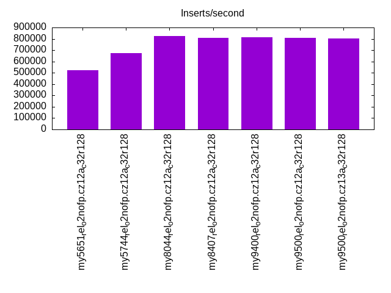
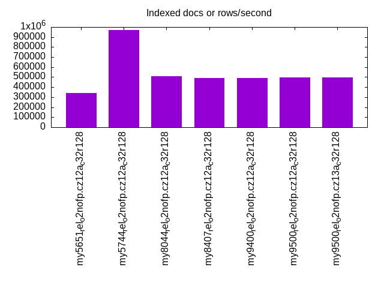
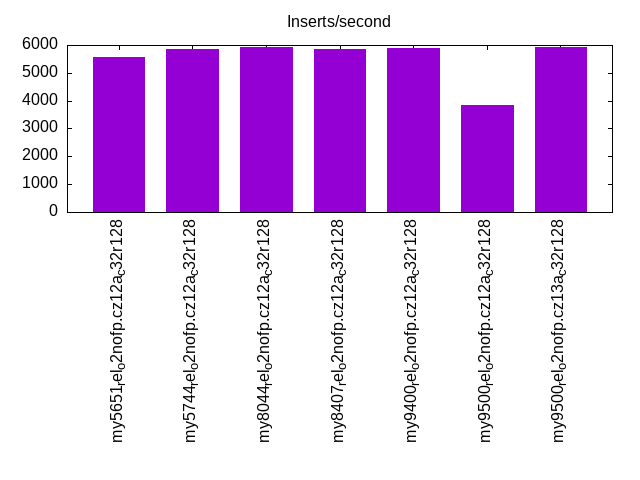
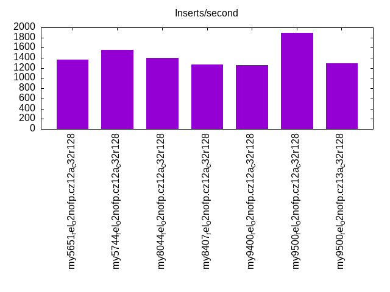
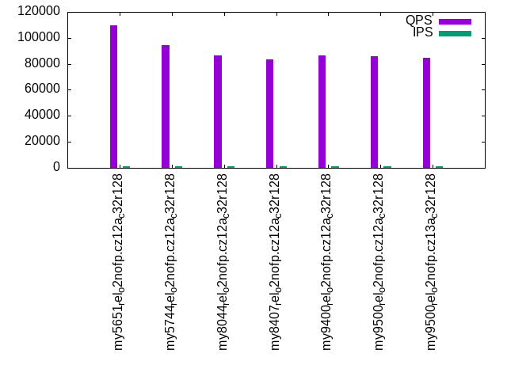
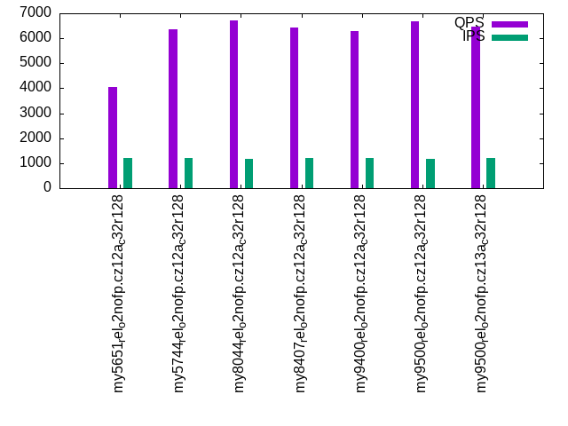
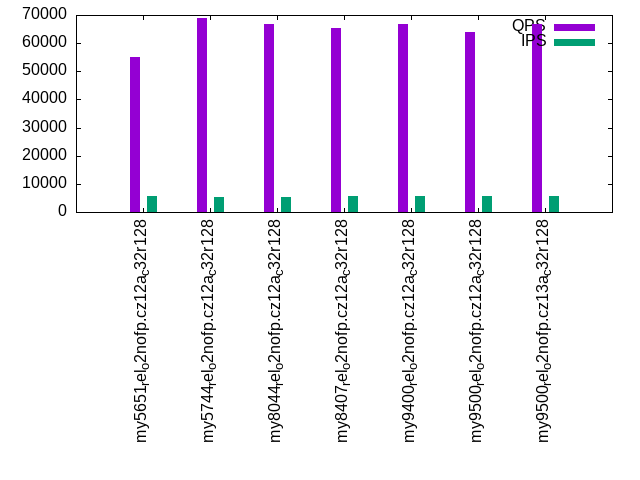
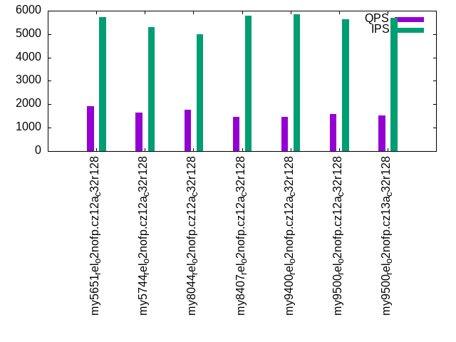
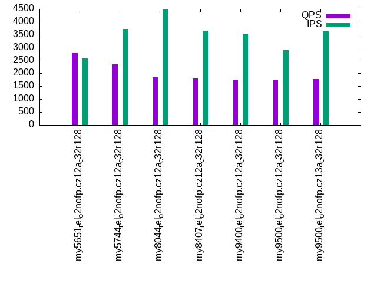

Introduction
This is a report for the insert benchmark with 3600M docs and 12 client(s). It is generated by scripts (bash, awk, sed) and Tufte might not be impressed. An overview of the insert benchmark is here and a short update is here. Below, by DBMS, I mean DBMS+version.config. An example is my8020.c10b40 where my means MySQL, 8020 is version 8.0.20 and c10b40 is the name for the configuration file.
The test server has 32 cores, 128G RAM and 1 NVMe devices. The benchmark was run with 8 clients and there were 1 or 3 connections per client (1 for queries or inserts without rate limits, 1+1 for rate limited inserts+deletes). It uses 8 tables with a table per client. It loads 300M rows per table without secondary indexes, creates 3 secondary indexes per table, then inserts 4m+1m rows per table with a delete per insert to avoid growing the table. It then does 6 read+write tests for 1800s each that do queries as fast as possible with 100,100,500,500,1000,1000 inserts/s and the same for deletes/s per client concurrent with the queries. The database is larger than RAM and most tests are IO-bound except for the range query (qr*) tests that frequently have a cached working set. Clients and the DBMS share one server.
The tested DBMS are:
- my5651_rel_o2nofp.cz12a_c32r128 - MySQL 5.6.51 with the cz12a_c32r128 config
- my5744_rel_o2nofp.cz12a_c32r128 - MySQL 5.7.44 with the cz12a_c32r128 config
- my8044_rel_o2nofp.cz12a_c32r128 - MySQL 8.0.44 with the cz12a_c32r128 config
- my8407_rel_o2nofp.cz12a_c32r128 - MySQL 8.4.7 with the cz12a_c32r128 config
- my9400_rel_o2nofp.cz12a_c32r128 - MySQL 9.4.0 with the cz12a_c32r128 config
- my9500_rel_o2nofp.cz12a_c32r128 - MySQL 9.5.0 with the cz12a_c32r128 config
- my9500_rel_o2nofp.cz13a_c32r128 - MySQL 9.5.0 with the cz13a_c32r128 config
Contents
- Summary
- l.i0: load without secondary indexes
- l.x: create secondary indexes
- l.i1: continue load after secondary indexes created with 50 inserts per transaction
- l.i2: continue load after secondary indexes created with 5 inserts per transaction
- qr100.L1: range queries with 100 insert/s per client
- qp100.L2: point queries with 100 insert/s per client
- qr500.L3: range queries with 500 insert/s per client
- qp500.L4: point queries with 500 insert/s per client
- qr1000.L5: range queries with 1000 insert/s per client
- qp1000.L6: point queries with 1000 insert/s per client
Summary
The numbers are inserts/s for l.i0, l.i1 and l.i2, indexed docs (or rows) /s for l.x and queries/s for qr100, qp100 thru qr1000, qp1000" The values are the average rate over the entire test for inserts (IPS) and queries (QPS). The range of values for IPS and QPS is split into 3 parts: bottom 25%, middle 50%, top 25%. Values in the bottom 25% have a red background, values in the top 25% have a green background and values in the middle have no color. A gray background is used for values that can be ignored because the DBMS did not sustain the target insert rate. Red backgrounds are not used when the minimum value is within 80% of the max value.
| dbms | l.i0 | l.x | l.i1 | l.i2 | qr100 | qp100 | qr500 | qp500 | qr1000 | qp1000 |
|---|---|---|---|---|---|---|---|---|---|---|
| my5651_rel_o2nofp.cz12a_c32r128 | 525241 | 340748 | 5561 | 1364 | 109827 | 4053 | 54982 | 1908 | 44094 | 2793 |
| my5744_rel_o2nofp.cz12a_c32r128 | 671016 | 972973 | 5869 | 1557 | 94284 | 6360 | 68776 | 1652 | 47149 | 2362 |
| my8044_rel_o2nofp.cz12a_c32r128 | 824553 | 508978 | 5932 | 1404 | 86332 | 6722 | 66654 | 1753 | 40932 | 1841 |
| my8407_rel_o2nofp.cz12a_c32r128 | 808444 | 491803 | 5859 | 1269 | 83544 | 6414 | 65214 | 1467 | 38162 | 1799 |
| my9400_rel_o2nofp.cz12a_c32r128 | 811725 | 493016 | 5905 | 1254 | 86486 | 6304 | 66648 | 1472 | 37761 | 1764 |
| my9500_rel_o2nofp.cz12a_c32r128 | 806090 | 495186 | 3838 | 1888 | 85684 | 6684 | 63865 | 1570 | 43199 | 1732 |
| my9500_rel_o2nofp.cz13a_c32r128 | 804829 | 496483 | 5930 | 1289 | 84966 | 6459 | 66957 | 1514 | 38857 | 1787 |
This table has relative throughput, throughput for the DBMS relative to the DBMS in the first line, using the absolute throughput from the previous table. Values less than 0.95 have a yellow background. Values greater than 1.05 have a blue background.
| dbms | l.i0 | l.x | l.i1 | l.i2 | qr100 | qp100 | qr500 | qp500 | qr1000 | qp1000 |
|---|---|---|---|---|---|---|---|---|---|---|
| my5651_rel_o2nofp.cz12a_c32r128 | 1.00 | 1.00 | 1.00 | 1.00 | 1.00 | 1.00 | 1.00 | 1.00 | 1.00 | 1.00 |
| my5744_rel_o2nofp.cz12a_c32r128 | 1.28 | 2.86 | 1.06 | 1.14 | 0.86 | 1.57 | 1.25 | 0.87 | 1.07 | 0.85 |
| my8044_rel_o2nofp.cz12a_c32r128 | 1.57 | 1.49 | 1.07 | 1.03 | 0.79 | 1.66 | 1.21 | 0.92 | 0.93 | 0.66 |
| my8407_rel_o2nofp.cz12a_c32r128 | 1.54 | 1.44 | 1.05 | 0.93 | 0.76 | 1.58 | 1.19 | 0.77 | 0.87 | 0.64 |
| my9400_rel_o2nofp.cz12a_c32r128 | 1.55 | 1.45 | 1.06 | 0.92 | 0.79 | 1.56 | 1.21 | 0.77 | 0.86 | 0.63 |
| my9500_rel_o2nofp.cz12a_c32r128 | 1.53 | 1.45 | 0.69 | 1.38 | 0.78 | 1.65 | 1.16 | 0.82 | 0.98 | 0.62 |
| my9500_rel_o2nofp.cz13a_c32r128 | 1.53 | 1.46 | 1.07 | 0.95 | 0.77 | 1.59 | 1.22 | 0.79 | 0.88 | 0.64 |
This lists the average rate of inserts/s for the tests that do inserts concurrent with queries. For such tests the query rate is listed in the table above. The read+write tests are setup so that the insert rate should match the target rate every second. Cells that are not at least 95% of the target have a red background to indicate a failure to satisfy the target.
| dbms | qr100.L1 | qp100.L2 | qr500.L3 | qp500.L4 | qr1000.L5 | qp1000.L6 |
|---|---|---|---|---|---|---|
| my5651_rel_o2nofp.cz12a_c32r128 | 1193 | 1191 | 5599 | 5729 | 7619 | 2589 |
| my5744_rel_o2nofp.cz12a_c32r128 | 1193 | 1191 | 5328 | 5304 | 10445 | 3731 |
| my8044_rel_o2nofp.cz12a_c32r128 | 1193 | 1181 | 5158 | 5005 | 10023 | 4479 |
| my8407_rel_o2nofp.cz12a_c32r128 | 1193 | 1192 | 5622 | 5800 | 9954 | 3659 |
| my9400_rel_o2nofp.cz12a_c32r128 | 1193 | 1192 | 5806 | 5835 | 9515 | 3532 |
| my9500_rel_o2nofp.cz12a_c32r128 | 1193 | 1189 | 5657 | 5640 | 4375 | 2906 |
| my9500_rel_o2nofp.cz13a_c32r128 | 1193 | 1193 | 5654 | 5681 | 10189 | 3642 |
| target | 1200 | 1200 | 6000 | 6000 | 12000 | 12000 |
l.i0
l.i0: load without secondary indexes. Graphs for performance per 1-second interval are here.
Average throughput:
Insert response time histogram: each cell has the percentage of responses that take <= the time in the header and max is the max response time in seconds. For the max column values in the top 25% of the range have a red background and in the bottom 25% of the range have a green background. The red background is not used when the min value is within 80% of the max value.
| dbms | 256us | 1ms | 4ms | 16ms | 64ms | 256ms | 1s | 4s | 16s | gt | max |
|---|---|---|---|---|---|---|---|---|---|---|---|
| my5651_rel_o2nofp.cz12a_c32r128 | 0.218 | 99.461 | 0.078 | 0.209 | 0.028 | 0.005 | 0.001 | 3.052 | |||
| my5744_rel_o2nofp.cz12a_c32r128 | 1.426 | 98.336 | 0.117 | 0.061 | 0.044 | 0.014 | 0.003 | 3.714 | |||
| my8044_rel_o2nofp.cz12a_c32r128 | 0.027 | 99.780 | 0.068 | 0.060 | 0.048 | 0.016 | 0.002 | 3.141 | |||
| my8407_rel_o2nofp.cz12a_c32r128 | 0.013 | 99.789 | 0.070 | 0.061 | 0.047 | 0.017 | 0.003 | 3.564 | |||
| my9400_rel_o2nofp.cz12a_c32r128 | 0.018 | 99.786 | 0.075 | 0.057 | 0.047 | 0.015 | 0.002 | 1.858 | |||
| my9500_rel_o2nofp.cz12a_c32r128 | 0.005 | 99.774 | 0.084 | 0.068 | 0.052 | 0.016 | 0.001 | 1.682 | |||
| my9500_rel_o2nofp.cz13a_c32r128 | 0.009 | 99.795 | 0.070 | 0.058 | 0.049 | 0.017 | 0.003 | 2.450 |
Performance metrics for the DBMS listed above. Some are normalized by throughput, others are not. Legend for results is here.
ips qps rps rmbps wps wmbps rpq rkbpq wpi wkbpi csps cpups cspq cpupq dbgb1 dbgb2 rss maxop p50 p99 tag 525241 0 3032 11.8 3393.4 186.9 0.006 0.023 0.006 0.364 81529 41.9 0.155 26 236.8 337.3 107.2 3.052 43895 21697 my5651_rel_o2nofp.cz12a_c32r128 671016 0 1 0.0 4373.7 239.9 0.000 0.000 0.007 0.366 85410 42.4 0.127 20 236.8 337.3 108.5 3.714 60993 8798 my5744_rel_o2nofp.cz12a_c32r128 824553 0 1 0.0 5489.6 306.6 0.000 0.000 0.007 0.381 146719 47.5 0.178 18 235.9 336.6 108.7 3.141 76190 12198 my8044_rel_o2nofp.cz12a_c32r128 808444 0 1 0.0 5376.7 300.5 0.000 0.000 0.007 0.381 144068 46.8 0.178 19 235.9 503.7 108.7 3.564 74791 5499 my8407_rel_o2nofp.cz12a_c32r128 811725 0 1 0.0 5411.0 301.9 0.000 0.000 0.007 0.381 144658 47.3 0.178 19 235.9 503.7 108.7 1.858 74890 14398 my9400_rel_o2nofp.cz12a_c32r128 806090 0 1 0.0 5389.3 302.4 0.000 0.000 0.007 0.384 152219 47.6 0.189 19 235.9 503.7 108.9 1.682 74391 17298 my9500_rel_o2nofp.cz12a_c32r128 804829 0 1 0.0 5364.5 299.5 0.000 0.000 0.007 0.381 143169 47.3 0.178 19 235.9 503.7 108.9 2.450 75389 3400 my9500_rel_o2nofp.cz13a_c32r128
Average values from iostat.
r/s rkB/s rrqm/s %rrqm r_await rareq-s w/s wkB/s wrqm/s %wrqm w_await wareq-s d/s dkB/s drqm/s %drqm d_await dareq-s f/s f_await aqu-sz %util 3032.1 12131.8 0.003 0.000 0.575 3.831 3393.4 191349 27.48 0.832 2.673 57.72 1.205 8.270 0.000 0.000 1.788 3.345 2.134 1.483 7.402 16.03 my5651_rel_o2nofp.cz12a_c32r128 0.994 8.582 0.000 0.000 3.172 5.261 4373.7 245614 82.26 1.930 8.764 56.80 0.954 25.15 0.000 0.000 3.537 15.07 13.04 3.197 34.00 33.29 my5744_rel_o2nofp.cz12a_c32r128 1.214 10.80 0.003 0.069 3.589 5.287 5489.6 313934 92.09 1.761 12.83 57.88 1.290 11.92 0.000 0.000 4.172 7.168 17.28 3.786 65.79 33.62 my8044_rel_o2nofp.cz12a_c32r128 1.209 10.90 0.003 0.056 4.579 5.221 5376.7 307694 93.40 1.821 14.44 57.94 1.271 28.02 0.000 0.000 5.610 16.94 16.98 4.207 70.80 34.20 my8407_rel_o2nofp.cz12a_c32r128 0.927 9.728 0.002 0.073 2.974 4.066 5411.0 309179 92.85 1.788 12.04 57.72 1.213 11.37 0.000 0.000 4.618 7.201 17.15 3.514 63.87 31.86 my9400_rel_o2nofp.cz12a_c32r128 1.159 10.74 0.000 0.000 3.619 5.229 5389.3 309708 92.34 1.790 12.71 58.05 1.485 11.70 0.000 0.000 4.940 6.023 17.31 3.540 66.78 32.23 my9500_rel_o2nofp.cz12a_c32r128 1.276 11.16 0.000 0.000 5.143 5.233 5364.5 306673 91.49 1.782 14.26 57.81 1.375 12.95 0.000 0.000 4.301 7.041 16.88 4.226 69.82 33.93 my9500_rel_o2nofp.cz13a_c32r128
l.x
l.x: create secondary indexes.
Average throughput:
Performance metrics for the DBMS listed above. Some are normalized by throughput, others are not. Legend for results is here.
ips qps rps rmbps wps wmbps rpq rkbpq wpi wkbpi csps cpups cspq cpupq dbgb1 dbgb2 rss maxop p50 p99 tag 340748 0 3606 310.6 6230.2 435.7 0.011 0.933 0.018 1.309 16524 25.5 0.048 24 501.5 602.0 107.7 0.047 NA NA my5651_rel_o2nofp.cz12a_c32r128 972973 0 9739 881.0 15657.6 1081.8 0.010 0.927 0.016 1.139 60176 20.5 0.062 7 545.2 645.7 109.1 0.025 NA NA my5744_rel_o2nofp.cz12a_c32r128 508978 0 6847 665.6 15857.7 745.7 0.013 1.339 0.031 1.500 62770 26.3 0.123 17 543.1 643.8 109.0 0.004 NA NA my8044_rel_o2nofp.cz12a_c32r128 491803 0 6606 643.9 15345.5 720.8 0.013 1.341 0.031 1.501 73922 26.7 0.150 17 543.1 810.9 109.0 0.002 NA NA my8407_rel_o2nofp.cz12a_c32r128 493016 0 6621 645.2 15377.6 722.3 0.013 1.340 0.031 1.500 66651 25.8 0.135 17 543.1 810.9 109.0 0.005 NA NA my9400_rel_o2nofp.cz12a_c32r128 495186 0 6652 648.2 15450.3 725.5 0.013 1.340 0.031 1.500 74275 25.9 0.150 17 543.1 810.9 109.2 0.008 NA NA my9500_rel_o2nofp.cz12a_c32r128 496483 0 6667 650.0 15483.4 727.5 0.013 1.341 0.031 1.500 70590 25.7 0.142 17 543.1 810.9 109.2 0.002 NA NA my9500_rel_o2nofp.cz13a_c32r128
Average values from iostat.
r/s rkB/s rrqm/s %rrqm r_await rareq-s w/s wkB/s wrqm/s %wrqm w_await wareq-s d/s dkB/s drqm/s %drqm d_await dareq-s f/s f_await aqu-sz %util 3606.3 318034 0.000 0.000 0.970 79.73 6230.2 446204 573.9 8.252 9.991 65.56 2.754 29376.7 0.000 0.000 0.294 187.2 212.9 8.390 28.34 86.29 my5651_rel_o2nofp.cz12a_c32r128 9738.8 902172 0.000 0.000 1.144 92.31 15657.6 1107731 146.3 1.339 16.58 107.5 9.812 83749.6 0.000 0.000 0.262 226.8 16.04 23.65 58.26 94.06 my5744_rel_o2nofp.cz12a_c32r128 6846.7 681575 0.000 0.000 5.520 112.1 15857.7 763631 96.72 0.771 22.38 72.54 10.20 82380.7 0.000 0.000 1.375 842.0 8.765 30.99 147.4 96.52 my8044_rel_o2nofp.cz12a_c32r128 6605.9 659306 0.001 0.000 4.810 110.9 15345.5 738077 99.24 0.715 19.05 71.20 9.952 79560.2 0.001 0.001 0.853 759.2 8.696 27.29 138.4 95.82 my8407_rel_o2nofp.cz12a_c32r128 6621.1 660674 0.000 0.000 6.449 111.8 15377.6 739685 99.87 0.720 24.58 72.90 10.22 79782.4 0.001 0.001 0.747 753.7 8.586 29.33 138.0 96.39 my9400_rel_o2nofp.cz12a_c32r128 6651.7 663774 0.000 0.000 5.138 111.2 15450.3 742911 99.85 0.754 18.11 71.48 10.14 80110.3 0.000 0.000 1.819 781.9 8.546 28.45 139.9 95.96 my9500_rel_o2nofp.cz12a_c32r128 6667.3 665628 0.000 0.000 4.648 111.2 15483.4 744953 100.3 0.823 19.03 72.00 9.908 80333.8 0.001 0.001 0.932 840.4 8.533 30.52 141.1 96.07 my9500_rel_o2nofp.cz13a_c32r128
l.i1
l.i1: continue load after secondary indexes created with 50 inserts per transaction. Graphs for performance per 1-second interval are here.
Average throughput:
Insert response time histogram: each cell has the percentage of responses that take <= the time in the header and max is the max response time in seconds. For the max column values in the top 25% of the range have a red background and in the bottom 25% of the range have a green background. The red background is not used when the min value is within 80% of the max value.
| dbms | 256us | 1ms | 4ms | 16ms | 64ms | 256ms | 1s | 4s | 16s | gt | max |
|---|---|---|---|---|---|---|---|---|---|---|---|
| my5651_rel_o2nofp.cz12a_c32r128 | 0.114 | 14.403 | 43.452 | 28.944 | 12.681 | 0.261 | 0.145 | 0.001 | 23.878 | ||
| my5744_rel_o2nofp.cz12a_c32r128 | 0.233 | 20.066 | 38.544 | 29.528 | 11.213 | 0.294 | 0.122 | 13.787 | |||
| my8044_rel_o2nofp.cz12a_c32r128 | 0.662 | 21.286 | 34.822 | 37.112 | 5.696 | 0.229 | 0.193 | 11.689 | |||
| my8407_rel_o2nofp.cz12a_c32r128 | 0.443 | 19.491 | 34.311 | 39.620 | 5.685 | 0.293 | 0.157 | 11.448 | |||
| my9400_rel_o2nofp.cz12a_c32r128 | 0.490 | 19.601 | 35.183 | 38.705 | 5.565 | 0.277 | 0.179 | 12.418 | |||
| my9500_rel_o2nofp.cz12a_c32r128 | 0.001 | 2.391 | 17.248 | 70.510 | 9.178 | 0.448 | 0.225 | 11.007 | |||
| my9500_rel_o2nofp.cz13a_c32r128 | 0.470 | 19.888 | 34.669 | 39.147 | 5.389 | 0.252 | 0.185 | 12.189 |
Delete response time histogram: each cell has the percentage of responses that take <= the time in the header and max is the max response time in seconds. For the max column values in the top 25% of the range have a red background and in the bottom 25% of the range have a green background. The red background is not used when the min value is within 80% of the max value.
| dbms | 256us | 1ms | 4ms | 16ms | 64ms | 256ms | 1s | 4s | 16s | gt | max |
|---|---|---|---|---|---|---|---|---|---|---|---|
| my5651_rel_o2nofp.cz12a_c32r128 | 8.697 | 42.524 | 36.617 | 2.673 | 9.296 | 0.172 | 0.022 | nonzero | 18.271 | ||
| my5744_rel_o2nofp.cz12a_c32r128 | 48.659 | 36.521 | 7.518 | 0.467 | 6.790 | 0.043 | 0.002 | 5.745 | |||
| my8044_rel_o2nofp.cz12a_c32r128 | 40.352 | 24.749 | 22.274 | 12.116 | 0.382 | 0.088 | 0.041 | 9.321 | |||
| my8407_rel_o2nofp.cz12a_c32r128 | 39.140 | 24.349 | 20.267 | 15.574 | 0.545 | 0.106 | 0.018 | 9.182 | |||
| my9400_rel_o2nofp.cz12a_c32r128 | 40.412 | 23.375 | 20.876 | 14.683 | 0.522 | 0.110 | 0.021 | 7.169 | |||
| my9500_rel_o2nofp.cz12a_c32r128 | 31.006 | 7.593 | 9.104 | 51.199 | 0.930 | 0.139 | 0.028 | 7.083 | |||
| my9500_rel_o2nofp.cz13a_c32r128 | 40.353 | 23.377 | 20.771 | 14.855 | 0.504 | 0.111 | 0.029 | 7.440 |
Performance metrics for the DBMS listed above. Some are normalized by throughput, others are not. Legend for results is here.
ips qps rps rmbps wps wmbps rpq rkbpq wpi wkbpi csps cpups cspq cpupq dbgb1 dbgb2 rss maxop p50 p99 tag 5561 0 11062 170.7 19016.2 496.4 1.989 31.441 3.420 91.417 79151 8.7 14.234 501 737.7 850.8 107.3 23.878 250 0 my5651_rel_o2nofp.cz12a_c32r128 5869 0 11643 181.9 18433.0 503.6 1.984 31.743 3.141 87.868 85672 9.6 14.598 523 735.0 847.5 108.6 13.787 250 0 my5744_rel_o2nofp.cz12a_c32r128 5932 0 10495 164.0 15625.4 470.2 1.769 28.306 2.634 81.169 104335 9.9 17.587 534 736.3 850.4 108.9 11.689 350 0 my8044_rel_o2nofp.cz12a_c32r128 5859 0 10470 163.6 15649.3 470.1 1.787 28.591 2.671 82.159 104559 9.9 17.845 541 735.2 1020.9 108.9 11.448 400 0 my8407_rel_o2nofp.cz12a_c32r128 5905 0 10525 164.5 15742.3 473.4 1.783 28.520 2.666 82.097 105260 10.0 17.826 542 735.2 1020.8 108.9 12.418 400 0 my9400_rel_o2nofp.cz12a_c32r128 3838 0 11205 175.1 16039.0 471.9 2.919 46.710 4.179 125.901 104375 8.9 27.195 742 716.5 994.9 109.0 11.007 300 0 my9500_rel_o2nofp.cz12a_c32r128 5930 0 10560 165.0 15730.2 473.0 1.781 28.491 2.653 81.677 105143 10.0 17.730 540 735.7 1021.5 109.0 12.189 400 0 my9500_rel_o2nofp.cz13a_c32r128
Average values from iostat.
r/s rkB/s rrqm/s %rrqm r_await rareq-s w/s wkB/s wrqm/s %wrqm w_await wareq-s d/s dkB/s drqm/s %drqm d_await dareq-s f/s f_await aqu-sz %util 11061.5 174833 0.000 0.000 0.444 15.78 19016.2 508341 43.71 0.278 7.681 28.14 0.017 0.651 0.000 0.000 0.466 2.637 6.656 3.942 28.38 99.06 my5651_rel_o2nofp.cz12a_c32r128 11643.1 186287 0.000 0.000 0.643 16.00 18433.0 515661 58.18 0.338 8.844 28.24 0.014 0.106 0.000 0.000 0.742 0.350 10.67 4.168 43.03 99.94 my5744_rel_o2nofp.cz12a_c32r128 10495.3 167924 0.000 0.000 15.13 15.99 15625.4 481533 41.92 0.304 99.09 31.20 0.026 3.981 0.000 0.000 3.633 17.19 12.38 61.35 404.2 99.81 my8044_rel_o2nofp.cz12a_c32r128 10470.2 167521 0.000 0.000 6.167 16.00 15649.3 481392 48.69 0.344 58.07 31.07 0.012 0.341 0.000 0.000 1.312 1.237 12.53 39.77 383.9 99.86 my8407_rel_o2nofp.cz12a_c32r128 10525.3 168404 0.001 0.000 10.30 16.00 15742.3 484761 46.69 0.330 68.02 31.11 0.014 2.115 0.000 0.000 1.120 6.788 12.61 42.49 383.0 99.86 my9400_rel_o2nofp.cz12a_c32r128 11204.9 179277 0.001 0.000 7.330 16.00 16039.0 483220 28.13 0.201 59.75 30.38 0.018 0.558 0.000 0.000 3.042 2.435 10.16 43.26 409.8 99.95 my9500_rel_o2nofp.cz12a_c32r128 10560.2 168961 0.001 0.000 12.06 16.00 15730.2 484368 47.07 0.341 75.11 31.16 0.013 0.299 0.000 0.000 0.692 1.235 12.54 48.03 385.9 99.87 my9500_rel_o2nofp.cz13a_c32r128
l.i2
l.i2: continue load after secondary indexes created with 5 inserts per transaction. Graphs for performance per 1-second interval are here.
Average throughput:
Insert response time histogram: each cell has the percentage of responses that take <= the time in the header and max is the max response time in seconds. For the max column values in the top 25% of the range have a red background and in the bottom 25% of the range have a green background. The red background is not used when the min value is within 80% of the max value.
| dbms | 256us | 1ms | 4ms | 16ms | 64ms | 256ms | 1s | 4s | 16s | gt | max |
|---|---|---|---|---|---|---|---|---|---|---|---|
| my5651_rel_o2nofp.cz12a_c32r128 | 0.012 | 0.816 | 6.894 | 22.654 | 46.418 | 22.713 | 0.276 | 0.213 | 0.005 | 6.535 | |
| my5744_rel_o2nofp.cz12a_c32r128 | nonzero | 2.932 | 12.643 | 18.785 | 49.912 | 15.187 | 0.351 | 0.188 | 0.002 | 6.066 | |
| my8044_rel_o2nofp.cz12a_c32r128 | 0.001 | 39.332 | 45.893 | 14.431 | 0.105 | 0.159 | 0.080 | 8.974 | |||
| my8407_rel_o2nofp.cz12a_c32r128 | 28.094 | 44.811 | 26.648 | 0.394 | 0.052 | 0.002 | 5.639 | ||||
| my9400_rel_o2nofp.cz12a_c32r128 | 27.958 | 44.701 | 26.874 | 0.408 | 0.053 | 0.007 | 6.009 | ||||
| my9500_rel_o2nofp.cz12a_c32r128 | 55.418 | 30.195 | 14.080 | 0.231 | 0.077 | 3.726 | |||||
| my9500_rel_o2nofp.cz13a_c32r128 | 29.572 | 44.267 | 25.722 | 0.364 | 0.070 | 0.004 | 5.919 |
Delete response time histogram: each cell has the percentage of responses that take <= the time in the header and max is the max response time in seconds. For the max column values in the top 25% of the range have a red background and in the bottom 25% of the range have a green background. The red background is not used when the min value is within 80% of the max value.
| dbms | 256us | 1ms | 4ms | 16ms | 64ms | 256ms | 1s | 4s | 16s | gt | max |
|---|---|---|---|---|---|---|---|---|---|---|---|
| my5651_rel_o2nofp.cz12a_c32r128 | 0.090 | 8.044 | 17.132 | 11.092 | 42.862 | 20.460 | 0.226 | 0.093 | 0.001 | 5.591 | |
| my5744_rel_o2nofp.cz12a_c32r128 | 0.002 | 35.238 | 4.854 | 0.642 | 48.074 | 11.134 | 0.046 | 0.010 | nonzero | 4.959 | |
| my8044_rel_o2nofp.cz12a_c32r128 | 0.018 | 48.607 | 43.194 | 8.063 | 0.039 | 0.058 | 0.020 | 8.456 | |||
| my8407_rel_o2nofp.cz12a_c32r128 | 39.388 | 41.148 | 19.344 | 0.102 | 0.018 | nonzero | 4.627 | ||||
| my9400_rel_o2nofp.cz12a_c32r128 | 39.369 | 40.991 | 19.520 | 0.098 | 0.021 | 0.001 | 6.009 | ||||
| my9500_rel_o2nofp.cz12a_c32r128 | 68.740 | 22.920 | 8.266 | 0.052 | 0.021 | 3.498 | |||||
| my9500_rel_o2nofp.cz13a_c32r128 | 40.774 | 40.517 | 18.582 | 0.100 | 0.026 | 0.001 | 5.903 |
Performance metrics for the DBMS listed above. Some are normalized by throughput, others are not. Legend for results is here.
ips qps rps rmbps wps wmbps rpq rkbpq wpi wkbpi csps cpups cspq cpupq dbgb1 dbgb2 rss maxop p50 p99 tag 1364 0 12276 187.5 18075.2 457.9 8.997 140.724 13.248 343.665 75788 7.1 55.547 1665 737.7 850.8 107.2 6.535 75 0 my5651_rel_o2nofp.cz12a_c32r128 1557 0 13111 204.9 18151.0 495.1 8.423 134.761 11.661 325.671 77997 8.3 50.107 1706 735.0 847.5 108.6 6.066 85 0 my5744_rel_o2nofp.cz12a_c32r128 1404 0 12681 198.1 16757.6 475.4 9.035 144.556 11.939 346.841 108724 8.7 77.461 1983 736.3 848.4 108.9 8.974 80 0 my8044_rel_o2nofp.cz12a_c32r128 1269 0 11607 181.4 15464.4 437.7 9.147 146.357 12.187 353.188 100467 8.2 79.176 2068 735.2 1021.3 108.9 5.639 75 0 my8407_rel_o2nofp.cz12a_c32r128 1254 0 11483 179.4 15279.3 432.8 9.161 146.572 12.189 353.580 99153 8.1 79.101 2068 735.2 1021.2 108.9 6.009 75 0 my9400_rel_o2nofp.cz12a_c32r128 1888 0 11733 183.3 16017.3 455.0 6.216 99.455 8.486 246.844 112642 9.1 59.675 1543 716.5 997.2 109.0 3.726 110 0 my9500_rel_o2nofp.cz12a_c32r128 1289 0 11846 185.1 15761.8 446.3 9.192 147.071 12.231 354.666 102043 8.4 79.183 2086 735.7 1021.9 109.0 5.919 75 0 my9500_rel_o2nofp.cz13a_c32r128
Average values from iostat.
r/s rkB/s rrqm/s %rrqm r_await rareq-s w/s wkB/s wrqm/s %wrqm w_await wareq-s d/s dkB/s drqm/s %drqm d_await dareq-s f/s f_await aqu-sz %util 12275.8 192004 0.000 0.000 0.337 15.61 18075.2 468896 19.74 0.119 4.658 26.19 0.003 0.016 0.000 0.000 0.151 0.064 4.944 4.020 22.94 99.40 my5651_rel_o2nofp.cz12a_c32r128 13110.6 209769 0.000 0.000 0.475 16.00 18151.0 506939 17.00 0.099 4.341 27.98 0.005 0.028 0.000 0.000 0.186 0.115 4.367 4.424 33.42 99.94 my5744_rel_o2nofp.cz12a_c32r128 12681.2 202898 0.000 0.000 13.94 16.00 16757.6 486827 1.719 0.032 93.76 29.28 0.027 351.5 0.000 0.000 0.608 20.95 6.258 67.11 410.0 99.88 my8044_rel_o2nofp.cz12a_c32r128 11607.0 185712 0.000 0.000 1.240 16.00 15464.4 448160 2.276 0.014 26.33 28.98 0.031 315.5 0.000 0.000 0.861 23.89 6.270 19.50 406.6 99.93 my8407_rel_o2nofp.cz12a_c32r128 11483.0 183728 0.000 0.000 1.374 16.00 15279.3 443213 1.981 0.014 28.11 29.01 0.033 310.0 0.000 0.000 0.972 16.97 6.169 21.58 408.3 99.94 my9400_rel_o2nofp.cz12a_c32r128 11733.3 187732 0.000 0.000 1.541 16.00 16017.3 465944 2.153 0.013 26.39 29.09 0.025 0.381 0.000 0.000 2.503 1.718 6.435 21.28 420.1 99.96 my9500_rel_o2nofp.cz12a_c32r128 11845.6 189530 0.000 0.000 1.212 16.00 15761.8 457058 2.090 0.013 26.23 29.00 0.031 322.4 0.000 0.000 1.258 27.36 6.396 19.83 405.0 99.93 my9500_rel_o2nofp.cz13a_c32r128
qr100.L1
qr100.L1: range queries with 100 insert/s per client. Graphs for performance per 1-second interval are here.
Average throughput:
Query response time histogram: each cell has the percentage of responses that take <= the time in the header and max is the max response time in seconds. For max values in the top 25% of the range have a red background and in the bottom 25% of the range have a green background. The red background is not used when the min value is within 80% of the max value.
| dbms | 256us | 1ms | 4ms | 16ms | 64ms | 256ms | 1s | 4s | 16s | gt | max |
|---|---|---|---|---|---|---|---|---|---|---|---|
| my5651_rel_o2nofp.cz12a_c32r128 | 99.504 | 0.389 | 0.095 | 0.012 | nonzero | nonzero | 0.152 | ||||
| my5744_rel_o2nofp.cz12a_c32r128 | 99.875 | 0.080 | 0.043 | 0.002 | nonzero | nonzero | 0.066 | ||||
| my8044_rel_o2nofp.cz12a_c32r128 | 99.919 | 0.079 | 0.001 | nonzero | nonzero | nonzero | 0.094 | ||||
| my8407_rel_o2nofp.cz12a_c32r128 | 99.902 | 0.094 | 0.003 | nonzero | nonzero | nonzero | nonzero | 0.718 | |||
| my9400_rel_o2nofp.cz12a_c32r128 | 99.907 | 0.088 | 0.004 | nonzero | nonzero | nonzero | nonzero | 0.533 | |||
| my9500_rel_o2nofp.cz12a_c32r128 | 99.890 | 0.108 | 0.001 | nonzero | nonzero | nonzero | nonzero | 0.651 | |||
| my9500_rel_o2nofp.cz13a_c32r128 | 99.901 | 0.091 | 0.006 | 0.001 | 0.001 | nonzero | nonzero | 0.762 |
Insert response time histogram: each cell has the percentage of responses that take <= the time in the header and max is the max response time in seconds. For max values in the top 25% of the range have a red background and in the bottom 25% of the range have a green background. The red background is not used when the min value is within 80% of the max value.
| dbms | 256us | 1ms | 4ms | 16ms | 64ms | 256ms | 1s | 4s | 16s | gt | max |
|---|---|---|---|---|---|---|---|---|---|---|---|
| my5651_rel_o2nofp.cz12a_c32r128 | 51.289 | 48.370 | 0.340 | 0.199 | |||||||
| my5744_rel_o2nofp.cz12a_c32r128 | 81.995 | 17.764 | 0.241 | 0.137 | |||||||
| my8044_rel_o2nofp.cz12a_c32r128 | 82.486 | 17.435 | 0.079 | 0.115 | |||||||
| my8407_rel_o2nofp.cz12a_c32r128 | 66.887 | 29.690 | 1.979 | 1.315 | 0.130 | 1.977 | |||||
| my9400_rel_o2nofp.cz12a_c32r128 | 72.979 | 26.525 | 0.435 | 0.058 | 0.002 | 1.119 | |||||
| my9500_rel_o2nofp.cz12a_c32r128 | 70.961 | 27.225 | 1.752 | 0.051 | 0.012 | 1.042 | |||||
| my9500_rel_o2nofp.cz13a_c32r128 | 66.169 | 30.150 | 2.773 | 0.847 | 0.060 | 1.909 |
Delete response time histogram: each cell has the percentage of responses that take <= the time in the header and max is the max response time in seconds. For max values in the top 25% of the range have a red background and in the bottom 25% of the range have a green background. The red background is not used when the min value is within 80% of the max value.
| dbms | 256us | 1ms | 4ms | 16ms | 64ms | 256ms | 1s | 4s | 16s | gt | max |
|---|---|---|---|---|---|---|---|---|---|---|---|
| my5651_rel_o2nofp.cz12a_c32r128 | 65.634 | 30.417 | 3.910 | 0.039 | 0.163 | ||||||
| my5744_rel_o2nofp.cz12a_c32r128 | 97.546 | 2.424 | 0.030 | 0.054 | |||||||
| my8044_rel_o2nofp.cz12a_c32r128 | 99.854 | 0.113 | 0.014 | 0.019 | 0.087 | ||||||
| my8407_rel_o2nofp.cz12a_c32r128 | 98.713 | 0.264 | 0.236 | 0.650 | 0.137 | 0.784 | |||||
| my9400_rel_o2nofp.cz12a_c32r128 | 99.468 | 0.361 | 0.141 | 0.030 | 0.142 | ||||||
| my9500_rel_o2nofp.cz12a_c32r128 | 96.833 | 1.715 | 1.123 | 0.315 | 0.014 | 0.959 | |||||
| my9500_rel_o2nofp.cz13a_c32r128 | 98.574 | 0.359 | 0.410 | 0.484 | 0.174 | 0.607 |
Performance metrics for the DBMS listed above. Some are normalized by throughput, others are not. Legend for results is here.
ips qps rps rmbps wps wmbps rpq rkbpq wpi wkbpi csps cpups cspq cpupq dbgb1 dbgb2 rss maxop p50 p99 tag 1193 109827 5634 87.5 4520.8 130.2 0.051 0.816 3.790 111.787 646835 39.3 5.890 115 737.7 850.8 107.2 0.152 9327 7423 my5651_rel_o2nofp.cz12a_c32r128 1193 94284 5574 87.1 4849.7 139.5 0.059 0.946 4.066 119.809 554737 40.4 5.884 137 735.0 847.5 108.7 0.066 7967 4816 my5744_rel_o2nofp.cz12a_c32r128 1193 86332 5109 79.8 4950.6 142.4 0.059 0.947 4.151 122.229 517321 40.9 5.992 152 736.3 848.4 108.8 0.094 7263 7119 my8044_rel_o2nofp.cz12a_c32r128 1193 83544 5133 80.2 5277.8 151.3 0.061 0.983 4.425 129.858 503318 40.7 6.025 156 735.2 1021.6 108.8 0.718 7039 6239 my8407_rel_o2nofp.cz12a_c32r128 1193 86486 5125 80.1 5435.6 155.8 0.059 0.948 4.557 133.726 519572 41.0 6.008 152 735.2 1021.4 108.8 0.533 7263 7038 my9400_rel_o2nofp.cz12a_c32r128 1193 85684 4947 77.3 4560.8 131.1 0.058 0.924 3.824 112.550 512294 40.8 5.979 152 716.5 997.4 109.0 0.651 7215 6943 my9500_rel_o2nofp.cz12a_c32r128 1193 84966 5129 80.1 5320.6 152.5 0.060 0.966 4.461 130.927 511314 40.7 6.018 153 735.7 1022.1 109.0 0.762 7183 5999 my9500_rel_o2nofp.cz13a_c32r128
Average values from iostat.
r/s rkB/s rrqm/s %rrqm r_await rareq-s w/s wkB/s wrqm/s %wrqm w_await wareq-s d/s dkB/s drqm/s %drqm d_await dareq-s f/s f_await aqu-sz %util 5633.7 89629.5 0.000 0.000 0.178 15.90 4520.8 133329 7.494 0.544 0.346 33.14 0.002 0.013 0.000 0.000 0.028 0.066 2.009 1.367 2.717 24.04 my5651_rel_o2nofp.cz12a_c32r128 5573.8 89180.5 0.000 0.000 0.179 16.00 4849.7 142896 7.571 0.189 0.483 29.74 0.002 0.007 0.000 0.000 0.011 0.033 2.048 1.766 3.550 26.26 my5744_rel_o2nofp.cz12a_c32r128 5109.0 81744.1 0.000 0.000 0.243 16.00 4950.6 145783 1.095 0.024 3.295 29.55 0.004 0.015 0.000 0.000 0.028 0.077 4.093 1.997 18.49 18.15 my8044_rel_o2nofp.cz12a_c32r128 5132.8 82124.7 0.000 0.000 0.401 16.00 5277.8 154882 1.547 0.031 8.444 29.47 0.004 0.040 0.000 0.000 0.123 0.166 2.726 5.438 44.32 26.98 my8407_rel_o2nofp.cz12a_c32r128 5125.2 82003.9 0.000 0.000 0.240 16.00 5435.6 159496 1.320 0.026 3.550 29.46 0.014 0.075 0.000 0.000 0.388 0.343 2.634 2.158 21.40 21.81 my9400_rel_o2nofp.cz12a_c32r128 4946.8 79149.0 0.000 0.000 0.253 16.00 4560.8 134239 1.482 0.035 3.286 29.55 0.023 0.367 0.000 0.000 1.119 1.761 3.310 2.416 16.97 18.73 my9500_rel_o2nofp.cz12a_c32r128 5128.8 82060.4 0.000 0.000 0.447 16.00 5320.6 156157 1.351 0.027 10.40 29.47 0.014 0.217 0.000 0.000 0.826 1.009 2.760 6.349 51.89 28.80 my9500_rel_o2nofp.cz13a_c32r128
qp100.L2
qp100.L2: point queries with 100 insert/s per client. Graphs for performance per 1-second interval are here.
Average throughput:
Query response time histogram: each cell has the percentage of responses that take <= the time in the header and max is the max response time in seconds. For max values in the top 25% of the range have a red background and in the bottom 25% of the range have a green background. The red background is not used when the min value is within 80% of the max value.
| dbms | 256us | 1ms | 4ms | 16ms | 64ms | 256ms | 1s | 4s | 16s | gt | max |
|---|---|---|---|---|---|---|---|---|---|---|---|
| my5651_rel_o2nofp.cz12a_c32r128 | 0.001 | 7.897 | 71.708 | 19.706 | 0.671 | 0.015 | 0.001 | 0.001 | nonzero | 6.726 | |
| my5744_rel_o2nofp.cz12a_c32r128 | 0.004 | 28.822 | 63.288 | 7.577 | 0.293 | 0.011 | 0.004 | 0.001 | 3.550 | ||
| my8044_rel_o2nofp.cz12a_c32r128 | 0.004 | 30.539 | 62.935 | 6.259 | 0.234 | 0.024 | 0.002 | 0.003 | nonzero | 5.866 | |
| my8407_rel_o2nofp.cz12a_c32r128 | 0.003 | 26.185 | 66.002 | 7.537 | 0.238 | 0.030 | 0.002 | 0.002 | nonzero | 4.166 | |
| my9400_rel_o2nofp.cz12a_c32r128 | 0.003 | 25.697 | 65.963 | 8.033 | 0.260 | 0.039 | 0.003 | 0.001 | nonzero | 4.043 | |
| my9500_rel_o2nofp.cz12a_c32r128 | 0.004 | 27.074 | 65.880 | 6.834 | 0.183 | 0.020 | 0.002 | 0.002 | nonzero | 4.883 | |
| my9500_rel_o2nofp.cz13a_c32r128 | 0.004 | 26.465 | 65.709 | 7.567 | 0.227 | 0.024 | 0.003 | 0.002 | 3.648 |
Insert response time histogram: each cell has the percentage of responses that take <= the time in the header and max is the max response time in seconds. For max values in the top 25% of the range have a red background and in the bottom 25% of the range have a green background. The red background is not used when the min value is within 80% of the max value.
| dbms | 256us | 1ms | 4ms | 16ms | 64ms | 256ms | 1s | 4s | 16s | gt | max |
|---|---|---|---|---|---|---|---|---|---|---|---|
| my5651_rel_o2nofp.cz12a_c32r128 | 6.162 | 49.938 | 42.708 | 1.072 | 0.093 | 0.028 | 6.711 | ||||
| my5744_rel_o2nofp.cz12a_c32r128 | 19.975 | 70.380 | 8.347 | 1.002 | 0.236 | 0.060 | 6.458 | ||||
| my8044_rel_o2nofp.cz12a_c32r128 | 23.519 | 67.201 | 8.414 | 0.338 | 0.273 | 0.255 | 8.608 | ||||
| my8407_rel_o2nofp.cz12a_c32r128 | 10.389 | 79.572 | 8.970 | 0.718 | 0.269 | 0.083 | 4.842 | ||||
| my9400_rel_o2nofp.cz12a_c32r128 | 6.995 | 81.319 | 10.373 | 1.120 | 0.192 | 3.900 | |||||
| my9500_rel_o2nofp.cz12a_c32r128 | 31.852 | 62.701 | 4.688 | 0.377 | 0.245 | 0.137 | 7.235 | ||||
| my9500_rel_o2nofp.cz13a_c32r128 | 9.525 | 80.125 | 9.488 | 0.556 | 0.250 | 0.056 | 4.506 |
Delete response time histogram: each cell has the percentage of responses that take <= the time in the header and max is the max response time in seconds. For max values in the top 25% of the range have a red background and in the bottom 25% of the range have a green background. The red background is not used when the min value is within 80% of the max value.
| dbms | 256us | 1ms | 4ms | 16ms | 64ms | 256ms | 1s | 4s | 16s | gt | max |
|---|---|---|---|---|---|---|---|---|---|---|---|
| my5651_rel_o2nofp.cz12a_c32r128 | 0.005 | 42.850 | 49.310 | 6.840 | 0.875 | 0.065 | 0.051 | 0.005 | 6.612 | ||
| my5744_rel_o2nofp.cz12a_c32r128 | 93.414 | 4.806 | 1.111 | 0.215 | 0.204 | 0.215 | 0.035 | 4.759 | |||
| my8044_rel_o2nofp.cz12a_c32r128 | 96.414 | 1.231 | 1.019 | 0.419 | 0.324 | 0.586 | 0.007 | 5.366 | |||
| my8407_rel_o2nofp.cz12a_c32r128 | 96.752 | 1.512 | 0.843 | 0.354 | 0.275 | 0.264 | 3.762 | ||||
| my9400_rel_o2nofp.cz12a_c32r128 | 96.701 | 1.553 | 0.979 | 0.507 | 0.160 | 0.100 | 2.037 | ||||
| my9500_rel_o2nofp.cz12a_c32r128 | 97.606 | 0.875 | 0.692 | 0.319 | 0.141 | 0.363 | 0.002 | 4.038 | |||
| my9500_rel_o2nofp.cz13a_c32r128 | 96.942 | 1.488 | 0.757 | 0.289 | 0.215 | 0.308 | 3.934 |
Performance metrics for the DBMS listed above. Some are normalized by throughput, others are not. Legend for results is here.
ips qps rps rmbps wps wmbps rpq rkbpq wpi wkbpi csps cpups cspq cpupq dbgb1 dbgb2 rss maxop p50 p99 tag 1191 4053 35684 557.1 14254.7 310.9 8.804 140.741 11.966 267.201 143684 18.3 35.450 1445 737.7 850.8 107.2 6.726 352 48 my5651_rel_o2nofp.cz12a_c32r128 1191 6360 49427 772.3 13227.8 324.9 7.772 124.347 11.104 279.264 164231 10.4 25.823 523 735.0 847.5 108.7 3.550 560 0 my5744_rel_o2nofp.cz12a_c32r128 1181 6722 51303 801.6 11640.8 325.7 7.632 122.108 9.858 282.459 180478 11.3 26.848 538 736.3 848.4 108.8 5.866 608 0 my8044_rel_o2nofp.cz12a_c32r128 1192 6414 49743 777.2 11807.2 329.9 7.755 124.076 9.905 283.438 174014 11.4 27.128 569 735.2 1021.8 108.8 4.166 528 0 my8407_rel_o2nofp.cz12a_c32r128 1192 6304 49059 766.5 11785.5 329.7 7.782 124.519 9.887 283.253 169650 11.2 26.912 569 735.2 1021.6 108.8 4.043 528 48 my9400_rel_o2nofp.cz12a_c32r128 1189 6684 51012 797.1 11471.5 320.2 7.632 122.117 9.645 275.641 179729 11.5 26.891 551 716.5 997.6 109.0 4.883 544 0 my9500_rel_o2nofp.cz12a_c32r128 1193 6459 49982 781.0 11798.6 329.9 7.739 123.816 9.892 283.210 173595 11.4 26.877 565 735.7 1022.3 109.0 3.648 528 0 my9500_rel_o2nofp.cz13a_c32r128
Average values from iostat.
r/s rkB/s rrqm/s %rrqm r_await rareq-s w/s wkB/s wrqm/s %wrqm w_await wareq-s d/s dkB/s drqm/s %drqm d_await dareq-s f/s f_await aqu-sz %util 35683.7 570438 0.000 0.000 0.237 15.99 14254.7 318316 6.553 0.053 0.425 23.53 0.002 0.013 0.000 0.000 0.036 0.066 1.677 3.271 12.96 98.66 my5651_rel_o2nofp.cz12a_c32r128 49427.3 790836 0.000 0.000 0.246 16.00 13227.8 332687 6.870 0.058 1.146 25.45 0.001 0.004 0.000 0.000 0.022 0.022 1.778 3.832 17.79 99.97 my5744_rel_o2nofp.cz12a_c32r128 51303.0 820848 0.000 0.000 3.399 16.00 11640.8 333556 2.135 0.026 30.34 28.72 0.002 0.009 0.000 0.000 0.056 0.033 2.870 18.68 137.2 99.87 my8044_rel_o2nofp.cz12a_c32r128 49742.7 795883 0.000 0.000 0.343 16.00 11807.2 337858 3.640 0.035 8.766 28.67 0.004 0.027 0.000 0.000 0.142 0.099 2.836 9.218 107.1 99.97 my8407_rel_o2nofp.cz12a_c32r128 49059.1 784945 0.000 0.000 0.295 16.00 11785.5 337638 2.662 0.026 8.182 28.71 0.001 0.013 0.000 0.000 0.014 0.033 2.912 6.999 102.2 99.97 my9400_rel_o2nofp.cz12a_c32r128 51012.3 816196 0.000 0.000 0.352 16.00 11471.5 327848 3.500 0.035 10.48 28.64 0.025 0.392 0.000 0.000 0.646 1.846 2.942 12.82 97.47 99.92 my9500_rel_o2nofp.cz12a_c32r128 49982.3 799717 0.000 0.000 0.310 16.00 11798.6 337785 3.098 0.030 8.012 28.69 0.004 0.053 0.000 0.000 0.097 0.232 2.880 8.703 99.71 99.98 my9500_rel_o2nofp.cz13a_c32r128
qr500.L3
qr500.L3: range queries with 500 insert/s per client. Graphs for performance per 1-second interval are here.
Average throughput:
Query response time histogram: each cell has the percentage of responses that take <= the time in the header and max is the max response time in seconds. For max values in the top 25% of the range have a red background and in the bottom 25% of the range have a green background. The red background is not used when the min value is within 80% of the max value.
| dbms | 256us | 1ms | 4ms | 16ms | 64ms | 256ms | 1s | 4s | 16s | gt | max |
|---|---|---|---|---|---|---|---|---|---|---|---|
| my5651_rel_o2nofp.cz12a_c32r128 | 94.661 | 3.363 | 1.593 | 0.283 | 0.097 | 0.002 | 0.001 | nonzero | nonzero | 7.319 | |
| my5744_rel_o2nofp.cz12a_c32r128 | 98.035 | 1.463 | 0.461 | 0.033 | 0.005 | 0.001 | 0.001 | nonzero | nonzero | 6.864 | |
| my8044_rel_o2nofp.cz12a_c32r128 | 98.171 | 1.482 | 0.336 | 0.006 | 0.004 | 0.001 | nonzero | nonzero | nonzero | 7.857 | |
| my8407_rel_o2nofp.cz12a_c32r128 | 97.732 | 1.718 | 0.530 | 0.010 | 0.008 | 0.001 | nonzero | nonzero | nonzero | 4.202 | |
| my9400_rel_o2nofp.cz12a_c32r128 | 97.581 | 1.780 | 0.612 | 0.013 | 0.010 | 0.002 | nonzero | nonzero | 3.462 | ||
| my9500_rel_o2nofp.cz12a_c32r128 | 97.236 | 2.062 | 0.667 | 0.019 | 0.014 | 0.002 | nonzero | nonzero | nonzero | 4.591 | |
| my9500_rel_o2nofp.cz13a_c32r128 | 97.869 | 1.612 | 0.500 | 0.010 | 0.008 | 0.001 | nonzero | nonzero | nonzero | 4.984 |
Insert response time histogram: each cell has the percentage of responses that take <= the time in the header and max is the max response time in seconds. For max values in the top 25% of the range have a red background and in the bottom 25% of the range have a green background. The red background is not used when the min value is within 80% of the max value.
| dbms | 256us | 1ms | 4ms | 16ms | 64ms | 256ms | 1s | 4s | 16s | gt | max |
|---|---|---|---|---|---|---|---|---|---|---|---|
| my5651_rel_o2nofp.cz12a_c32r128 | 8.333 | 62.163 | 28.129 | 1.196 | 0.106 | 0.072 | 12.387 | ||||
| my5744_rel_o2nofp.cz12a_c32r128 | 3.164 | 75.618 | 20.400 | 0.392 | 0.254 | 0.173 | 7.622 | ||||
| my8044_rel_o2nofp.cz12a_c32r128 | 14.912 | 68.854 | 14.942 | 0.836 | 0.190 | 0.267 | 9.013 | ||||
| my8407_rel_o2nofp.cz12a_c32r128 | 10.660 | 70.393 | 17.127 | 1.425 | 0.354 | 0.041 | 8.602 | ||||
| my9400_rel_o2nofp.cz12a_c32r128 | nonzero | 9.464 | 69.324 | 19.167 | 1.774 | 0.265 | 0.006 | 4.513 | |||
| my9500_rel_o2nofp.cz12a_c32r128 | 14.137 | 69.435 | 14.986 | 1.106 | 0.296 | 0.039 | 4.735 | ||||
| my9500_rel_o2nofp.cz13a_c32r128 | 12.166 | 69.267 | 16.906 | 1.300 | 0.332 | 0.029 | 6.358 |
Delete response time histogram: each cell has the percentage of responses that take <= the time in the header and max is the max response time in seconds. For max values in the top 25% of the range have a red background and in the bottom 25% of the range have a green background. The red background is not used when the min value is within 80% of the max value.
| dbms | 256us | 1ms | 4ms | 16ms | 64ms | 256ms | 1s | 4s | 16s | gt | max |
|---|---|---|---|---|---|---|---|---|---|---|---|
| my5651_rel_o2nofp.cz12a_c32r128 | 0.001 | 41.325 | 40.958 | 15.764 | 1.630 | 0.199 | 0.100 | 0.023 | 9.125 | ||
| my5744_rel_o2nofp.cz12a_c32r128 | 80.910 | 15.545 | 2.875 | 0.147 | 0.291 | 0.200 | 0.031 | 6.790 | |||
| my8044_rel_o2nofp.cz12a_c32r128 | 82.768 | 11.338 | 4.260 | 1.126 | 0.131 | 0.291 | 0.086 | 6.978 | |||
| my8407_rel_o2nofp.cz12a_c32r128 | 76.256 | 16.762 | 4.880 | 1.706 | 0.147 | 0.237 | 0.013 | 8.657 | |||
| my9400_rel_o2nofp.cz12a_c32r128 | 71.328 | 20.573 | 5.535 | 2.220 | 0.183 | 0.162 | 3.601 | ||||
| my9500_rel_o2nofp.cz12a_c32r128 | 74.792 | 18.538 | 4.767 | 1.479 | 0.194 | 0.224 | 0.007 | 4.584 | |||
| my9500_rel_o2nofp.cz13a_c32r128 | 75.981 | 17.362 | 4.741 | 1.539 | 0.153 | 0.212 | 0.011 | 5.212 |
Performance metrics for the DBMS listed above. Some are normalized by throughput, others are not. Legend for results is here.
ips qps rps rmbps wps wmbps rpq rkbpq wpi wkbpi csps cpups cspq cpupq dbgb1 dbgb2 rss maxop p50 p99 tag 5599 54982 13689 211.7 19809.5 466.6 0.249 3.942 3.538 85.346 388338 32.4 7.063 189 737.7 850.8 107.2 7.319 4927 0 my5651_rel_o2nofp.cz12a_c32r128 5328 68776 15227 237.9 19037.2 499.2 0.221 3.542 3.573 95.936 465743 43.0 6.772 200 735.0 847.5 108.7 6.864 6463 0 my5744_rel_o2nofp.cz12a_c32r128 5158 66654 14051 219.5 16464.4 471.6 0.211 3.373 3.192 93.628 467937 44.0 7.020 211 736.3 848.4 108.8 7.857 6127 0 my8044_rel_o2nofp.cz12a_c32r128 5622 65214 13615 212.7 15797.6 452.1 0.209 3.340 2.810 82.351 457125 44.9 7.010 220 735.2 1022.8 108.8 4.202 5823 0 my8407_rel_o2nofp.cz12a_c32r128 5806 66648 13541 211.6 15804.3 452.6 0.203 3.251 2.722 79.824 466588 45.2 7.001 217 735.2 1022.7 108.8 3.462 5919 624 my9400_rel_o2nofp.cz12a_c32r128 5657 63865 13988 218.6 16275.0 465.2 0.219 3.504 2.877 84.200 456891 43.6 7.154 218 716.5 998.7 109.0 4.591 5679 0 my9500_rel_o2nofp.cz12a_c32r128 5654 66957 13794 215.5 16074.5 460.3 0.206 3.296 2.843 83.355 467265 45.2 6.979 216 735.7 1023.4 109.0 4.984 5967 0 my9500_rel_o2nofp.cz13a_c32r128
Average values from iostat.
r/s rkB/s rrqm/s %rrqm r_await rareq-s w/s wkB/s wrqm/s %wrqm w_await wareq-s d/s dkB/s drqm/s %drqm d_await dareq-s f/s f_await aqu-sz %util 13689.0 216752 0.000 0.000 0.378 15.81 19809.5 477825 18.95 0.103 2.654 24.46 0.006 0.027 0.000 0.000 0.166 0.093 4.729 4.468 22.94 98.60 my5651_rel_o2nofp.cz12a_c32r128 15226.9 243631 0.000 0.000 0.527 16.00 19037.2 511149 13.79 0.078 4.714 26.89 0.012 0.059 0.000 0.000 0.288 0.198 3.932 4.945 35.83 99.81 my5744_rel_o2nofp.cz12a_c32r128 14050.8 224812 0.000 0.000 6.835 16.00 16464.4 482887 1.751 0.034 92.75 29.93 0.006 0.040 0.000 0.000 0.193 0.162 6.651 63.88 375.5 99.06 my8044_rel_o2nofp.cz12a_c32r128 13615.0 217839 0.000 0.000 1.188 16.00 15797.6 462979 2.498 0.021 29.46 29.51 0.018 0.150 0.000 0.000 1.184 0.578 6.586 20.01 355.4 99.31 my8407_rel_o2nofp.cz12a_c32r128 13540.8 216653 0.000 0.000 1.421 16.00 15804.3 463488 2.085 0.015 22.79 29.43 0.034 0.187 0.000 0.000 2.238 0.674 6.921 17.41 356.6 99.30 my9400_rel_o2nofp.cz12a_c32r128 13987.7 223803 0.000 0.000 1.060 16.00 16275.0 476354 2.111 0.016 23.69 29.38 0.036 0.563 0.000 0.000 2.811 2.534 7.073 21.24 349.2 99.47 my9500_rel_o2nofp.cz12a_c32r128 13794.0 220704 0.000 0.000 1.376 16.00 16074.5 471324 2.277 0.015 22.55 29.41 0.018 0.145 0.000 0.000 1.079 0.581 6.685 18.05 346.7 99.07 my9500_rel_o2nofp.cz13a_c32r128
qp500.L4
qp500.L4: point queries with 500 insert/s per client. Graphs for performance per 1-second interval are here.
Average throughput:
Query response time histogram: each cell has the percentage of responses that take <= the time in the header and max is the max response time in seconds. For max values in the top 25% of the range have a red background and in the bottom 25% of the range have a green background. The red background is not used when the min value is within 80% of the max value.
| dbms | 256us | 1ms | 4ms | 16ms | 64ms | 256ms | 1s | 4s | 16s | gt | max |
|---|---|---|---|---|---|---|---|---|---|---|---|
| my5651_rel_o2nofp.cz12a_c32r128 | 0.219 | 39.238 | 55.961 | 4.484 | 0.073 | 0.014 | 0.011 | 0.001 | 5.828 | ||
| my5744_rel_o2nofp.cz12a_c32r128 | 0.067 | 31.217 | 64.571 | 3.964 | 0.061 | 0.082 | 0.037 | 0.001 | 5.725 | ||
| my8044_rel_o2nofp.cz12a_c32r128 | 0.294 | 47.413 | 48.301 | 3.676 | 0.248 | 0.022 | 0.036 | 0.008 | 8.168 | ||
| my8407_rel_o2nofp.cz12a_c32r128 | 0.079 | 40.574 | 51.387 | 6.655 | 1.253 | 0.037 | 0.016 | 3.088 | |||
| my9400_rel_o2nofp.cz12a_c32r128 | 0.089 | 40.555 | 51.325 | 6.680 | 1.299 | 0.040 | 0.012 | 2.495 | |||
| my9500_rel_o2nofp.cz12a_c32r128 | 0.101 | 41.810 | 51.485 | 5.750 | 0.796 | 0.034 | 0.023 | 0.002 | 5.006 | ||
| my9500_rel_o2nofp.cz13a_c32r128 | 0.102 | 41.524 | 51.095 | 6.228 | 0.990 | 0.039 | 0.023 | nonzero | 4.169 |
Insert response time histogram: each cell has the percentage of responses that take <= the time in the header and max is the max response time in seconds. For max values in the top 25% of the range have a red background and in the bottom 25% of the range have a green background. The red background is not used when the min value is within 80% of the max value.
| dbms | 256us | 1ms | 4ms | 16ms | 64ms | 256ms | 1s | 4s | 16s | gt | max |
|---|---|---|---|---|---|---|---|---|---|---|---|
| my5651_rel_o2nofp.cz12a_c32r128 | 6.879 | 68.730 | 23.652 | 0.573 | 0.107 | 0.059 | 5.779 | ||||
| my5744_rel_o2nofp.cz12a_c32r128 | 3.972 | 83.869 | 11.398 | 0.250 | 0.336 | 0.175 | 7.381 | ||||
| my8044_rel_o2nofp.cz12a_c32r128 | 10.240 | 74.927 | 14.000 | 0.323 | 0.198 | 0.312 | 9.202 | ||||
| my8407_rel_o2nofp.cz12a_c32r128 | 9.813 | 64.375 | 24.056 | 1.512 | 0.244 | 3.537 | |||||
| my9400_rel_o2nofp.cz12a_c32r128 | 9.447 | 64.113 | 24.572 | 1.680 | 0.188 | 2.903 | |||||
| my9500_rel_o2nofp.cz12a_c32r128 | 8.033 | 70.499 | 20.081 | 1.058 | 0.269 | 0.061 | 5.501 | ||||
| my9500_rel_o2nofp.cz13a_c32r128 | 8.777 | 66.672 | 22.937 | 1.296 | 0.310 | 0.009 | 15.257 |
Delete response time histogram: each cell has the percentage of responses that take <= the time in the header and max is the max response time in seconds. For max values in the top 25% of the range have a red background and in the bottom 25% of the range have a green background. The red background is not used when the min value is within 80% of the max value.
| dbms | 256us | 1ms | 4ms | 16ms | 64ms | 256ms | 1s | 4s | 16s | gt | max |
|---|---|---|---|---|---|---|---|---|---|---|---|
| my5651_rel_o2nofp.cz12a_c32r128 | 23.937 | 57.240 | 17.517 | 1.061 | 0.120 | 0.106 | 0.019 | 5.771 | |||
| my5744_rel_o2nofp.cz12a_c32r128 | 69.857 | 26.219 | 3.244 | 0.138 | 0.252 | 0.256 | 0.033 | 5.999 | |||
| my8044_rel_o2nofp.cz12a_c32r128 | 55.480 | 38.015 | 5.072 | 0.805 | 0.178 | 0.314 | 0.136 | 8.405 | |||
| my8407_rel_o2nofp.cz12a_c32r128 | 49.051 | 40.456 | 7.629 | 2.490 | 0.250 | 0.123 | 2.994 | ||||
| my9400_rel_o2nofp.cz12a_c32r128 | 48.892 | 39.787 | 8.190 | 2.775 | 0.279 | 0.077 | 2.494 | ||||
| my9500_rel_o2nofp.cz12a_c32r128 | 51.299 | 39.283 | 7.057 | 1.906 | 0.217 | 0.213 | 0.025 | 5.295 | |||
| my9500_rel_o2nofp.cz13a_c32r128 | 48.018 | 41.119 | 8.130 | 2.274 | 0.235 | 0.222 | 0.003 | 7.529 |
Performance metrics for the DBMS listed above. Some are normalized by throughput, others are not. Legend for results is here.
ips qps rps rmbps wps wmbps rpq rkbpq wpi wkbpi csps cpups cspq cpupq dbgb1 dbgb2 rss maxop p50 p99 tag 5729 1908 27721 430.9 22842.9 443.1 14.533 231.333 3.987 79.198 163398 17.6 85.661 2953 737.7 850.8 107.3 5.828 160 0 my5651_rel_o2nofp.cz12a_c32r128 5304 1652 27060 422.8 17841.4 477.6 16.382 262.110 3.363 92.205 114419 11.1 69.269 2150 735.0 847.5 108.7 5.725 160 0 my5744_rel_o2nofp.cz12a_c32r128 5005 1753 26609 415.8 15944.9 450.7 15.181 242.892 3.186 92.227 134906 11.0 76.966 2008 736.3 848.6 108.8 8.168 176 0 my8044_rel_o2nofp.cz12a_c32r128 5800 1467 22973 358.9 14640.9 412.3 15.661 250.572 2.524 72.796 121270 10.9 82.671 2378 735.2 1024.2 108.8 3.088 128 0 my8407_rel_o2nofp.cz12a_c32r128 5835 1472 22977 359.0 14559.2 410.6 15.609 249.750 2.495 72.067 121739 10.9 82.703 2370 735.2 1024.1 108.8 2.495 128 0 my9400_rel_o2nofp.cz12a_c32r128 5640 1570 24157 377.4 14925.6 420.3 15.385 246.167 2.647 76.319 126213 11.1 80.385 2262 716.5 999.8 109.0 5.006 144 0 my9500_rel_o2nofp.cz12a_c32r128 5681 1514 23553 368.0 14833.5 418.1 15.561 248.971 2.611 75.360 123033 11.1 81.285 2347 735.7 1024.7 109.0 4.169 128 0 my9500_rel_o2nofp.cz13a_c32r128
Average values from iostat.
r/s rkB/s rrqm/s %rrqm r_await rareq-s w/s wkB/s wrqm/s %wrqm w_await wareq-s d/s dkB/s drqm/s %drqm d_await dareq-s f/s f_await aqu-sz %util 27721.0 441267 0.000 0.000 0.395 15.91 22842.9 453756 15.15 0.072 0.808 20.38 0.007 0.034 0.000 0.000 0.196 0.127 3.851 3.838 22.11 99.55 my5651_rel_o2nofp.cz12a_c32r128 27059.6 432954 0.000 0.000 0.543 16.00 17841.4 489100 14.23 0.088 3.724 27.49 0.009 0.045 0.000 0.000 0.412 0.187 3.512 5.105 43.20 100.00 my5744_rel_o2nofp.cz12a_c32r128 26608.8 425741 0.000 0.000 5.988 16.00 15944.9 461561 2.206 0.042 91.37 29.27 0.006 0.030 0.000 0.000 0.265 0.111 4.874 55.36 347.8 100.00 my8044_rel_o2nofp.cz12a_c32r128 22972.8 367565 0.000 0.000 0.847 16.00 14640.9 422233 2.904 0.020 22.60 28.85 0.026 0.222 0.000 0.000 1.856 0.946 5.571 16.33 333.0 100.00 my8407_rel_o2nofp.cz12a_c32r128 22977.0 367632 0.000 0.000 0.792 16.00 14559.2 420483 2.505 0.017 22.08 28.89 0.012 0.108 0.000 0.000 0.635 0.405 5.654 15.77 331.8 100.00 my9400_rel_o2nofp.cz12a_c32r128 24156.7 386507 0.000 0.000 0.837 16.00 14925.6 430407 2.655 0.020 24.05 28.85 0.039 0.595 0.000 0.000 2.098 2.691 5.381 22.09 324.4 100.00 my9500_rel_o2nofp.cz12a_c32r128 23552.7 376843 0.000 0.000 1.222 16.00 14833.5 428137 2.885 0.022 25.99 28.88 0.019 0.280 0.000 0.000 1.466 1.268 5.472 19.22 324.1 100.00 my9500_rel_o2nofp.cz13a_c32r128
qr1000.L5
qr1000.L5: range queries with 1000 insert/s per client. Graphs for performance per 1-second interval are here.
Average throughput:

Query response time histogram: each cell has the percentage of responses that take <= the time in the header and max is the max response time in seconds. For max values in the top 25% of the range have a red background and in the bottom 25% of the range have a green background. The red background is not used when the min value is within 80% of the max value.
| dbms | 256us | 1ms | 4ms | 16ms | 64ms | 256ms | 1s | 4s | 16s | gt | max |
|---|---|---|---|---|---|---|---|---|---|---|---|
| my5651_rel_o2nofp.cz12a_c32r128 | 90.174 | 6.785 | 2.626 | 0.368 | 0.044 | 0.001 | 0.002 | 0.001 | nonzero | 7.152 | |
| my5744_rel_o2nofp.cz12a_c32r128 | 91.682 | 5.840 | 2.286 | 0.160 | 0.028 | 0.002 | 0.002 | 0.001 | nonzero | 5.422 | |
| my8044_rel_o2nofp.cz12a_c32r128 | 70.077 | 27.729 | 2.095 | 0.053 | 0.040 | 0.004 | 0.001 | 0.001 | nonzero | 8.088 | |
| my8407_rel_o2nofp.cz12a_c32r128 | 64.299 | 32.840 | 2.711 | 0.076 | 0.061 | 0.013 | 0.001 | nonzero | 2.982 | ||
| my9400_rel_o2nofp.cz12a_c32r128 | 64.484 | 32.488 | 2.872 | 0.078 | 0.064 | 0.014 | 0.001 | nonzero | 3.251 | ||
| my9500_rel_o2nofp.cz12a_c32r128 | 65.646 | 31.694 | 2.535 | 0.065 | 0.050 | 0.009 | nonzero | nonzero | 3.026 | ||
| my9500_rel_o2nofp.cz13a_c32r128 | 65.157 | 31.998 | 2.696 | 0.075 | 0.061 | 0.012 | 0.001 | nonzero | 2.852 |
Insert response time histogram: each cell has the percentage of responses that take <= the time in the header and max is the max response time in seconds. For max values in the top 25% of the range have a red background and in the bottom 25% of the range have a green background. The red background is not used when the min value is within 80% of the max value.
| dbms | 256us | 1ms | 4ms | 16ms | 64ms | 256ms | 1s | 4s | 16s | gt | max |
|---|---|---|---|---|---|---|---|---|---|---|---|
| my5651_rel_o2nofp.cz12a_c32r128 | 0.007 | 17.353 | 66.263 | 8.187 | 7.893 | 0.209 | 0.088 | 8.420 | |||
| my5744_rel_o2nofp.cz12a_c32r128 | 0.007 | 20.646 | 69.896 | 8.817 | 0.357 | 0.234 | 0.044 | 6.831 | |||
| my8044_rel_o2nofp.cz12a_c32r128 | 0.018 | 37.214 | 53.944 | 8.194 | 0.366 | 0.135 | 0.130 | 8.376 | |||
| my8407_rel_o2nofp.cz12a_c32r128 | 0.019 | 28.815 | 49.784 | 19.854 | 1.400 | 0.128 | 3.578 | ||||
| my9400_rel_o2nofp.cz12a_c32r128 | 0.019 | 26.626 | 47.666 | 23.812 | 1.793 | 0.078 | 0.005 | 6.454 | |||
| my9500_rel_o2nofp.cz12a_c32r128 | 1.518 | 10.671 | 79.851 | 7.597 | 0.363 | 3.381 | |||||
| my9500_rel_o2nofp.cz13a_c32r128 | 0.017 | 28.156 | 51.233 | 19.220 | 1.278 | 0.096 | 3.331 |
Delete response time histogram: each cell has the percentage of responses that take <= the time in the header and max is the max response time in seconds. For max values in the top 25% of the range have a red background and in the bottom 25% of the range have a green background. The red background is not used when the min value is within 80% of the max value.
| dbms | 256us | 1ms | 4ms | 16ms | 64ms | 256ms | 1s | 4s | 16s | gt | max |
|---|---|---|---|---|---|---|---|---|---|---|---|
| my5651_rel_o2nofp.cz12a_c32r128 | 24.386 | 52.902 | 13.780 | 0.789 | 7.982 | 0.140 | 0.021 | 7.969 | |||
| my5744_rel_o2nofp.cz12a_c32r128 | 67.395 | 27.142 | 4.873 | 0.215 | 0.266 | 0.102 | 0.007 | 6.720 | |||
| my8044_rel_o2nofp.cz12a_c32r128 | 56.970 | 36.244 | 5.244 | 1.263 | 0.127 | 0.105 | 0.046 | 8.172 | |||
| my8407_rel_o2nofp.cz12a_c32r128 | 41.302 | 29.173 | 22.564 | 6.656 | 0.254 | 0.052 | 3.521 | ||||
| my9400_rel_o2nofp.cz12a_c32r128 | 39.249 | 27.247 | 23.955 | 9.201 | 0.314 | 0.034 | nonzero | 4.848 | |||
| my9500_rel_o2nofp.cz12a_c32r128 | 4.891 | 2.864 | 24.741 | 66.391 | 1.024 | 0.090 | 3.199 | ||||
| my9500_rel_o2nofp.cz13a_c32r128 | 42.056 | 29.964 | 21.886 | 5.798 | 0.254 | 0.042 | 3.014 |
Performance metrics for the DBMS listed above. Some are normalized by throughput, others are not. Legend for results is here.
ips qps rps rmbps wps wmbps rpq rkbpq wpi wkbpi csps cpups cspq cpupq dbgb1 dbgb2 rss maxop p50 p99 tag 7619 44094 11564 177.8 18712.2 468.7 0.262 4.128 2.456 62.995 327480 34.4 7.427 250 737.7 850.8 107.3 7.152 4143 0 my5651_rel_o2nofp.cz12a_c32r128 10445 47149 12632 197.4 18764.4 496.7 0.268 4.287 1.797 48.697 343920 41.7 7.294 283 735.0 847.5 108.7 5.422 4303 0 my5744_rel_o2nofp.cz12a_c32r128 10023 40932 12018 187.8 16414.8 471.9 0.294 4.698 1.638 48.207 325546 41.8 7.953 327 736.3 849.6 108.8 8.088 3743 0 my8044_rel_o2nofp.cz12a_c32r128 9954 38162 11132 173.9 15577.9 447.6 0.292 4.667 1.565 46.052 313607 43.3 8.218 363 735.2 1027.5 108.8 2.982 3168 624 my8407_rel_o2nofp.cz12a_c32r128 9515 37761 10853 169.6 15283.7 439.3 0.287 4.599 1.606 47.278 310387 42.7 8.220 362 735.2 1027.4 108.8 3.251 3248 672 my9400_rel_o2nofp.cz12a_c32r128 4375 43199 11768 183.9 15877.6 451.1 0.272 4.359 3.629 105.580 345893 41.0 8.007 304 716.5 1001.9 109.0 3.026 3712 1088 my9500_rel_o2nofp.cz12a_c32r128 10189 38857 11221 175.3 15489.0 445.6 0.289 4.621 1.520 44.784 316554 43.4 8.147 357 735.7 1028.1 109.0 2.852 3295 1072 my9500_rel_o2nofp.cz13a_c32r128
Average values from iostat.
r/s rkB/s rrqm/s %rrqm r_await rareq-s w/s wkB/s wrqm/s %wrqm w_await wareq-s d/s dkB/s drqm/s %drqm d_await dareq-s f/s f_await aqu-sz %util 11564.5 182029 0.000 0.000 0.398 15.71 18712.2 479957 26.57 0.154 6.402 25.95 0.011 0.055 0.000 0.000 0.298 0.201 6.661 3.911 23.52 98.83 my5651_rel_o2nofp.cz12a_c32r128 12632.0 202113 0.000 0.000 0.570 16.00 18764.4 508632 21.46 0.121 3.917 27.17 0.019 0.108 0.000 0.000 0.565 0.378 5.268 4.592 37.59 99.92 my5744_rel_o2nofp.cz12a_c32r128 12017.6 192282 0.000 0.000 15.71 16.00 16414.8 483190 2.230 0.046 124.0 29.84 0.011 0.071 0.000 0.000 4.314 0.269 7.187 69.15 406.4 99.54 my8044_rel_o2nofp.cz12a_c32r128 11131.7 178106 0.000 0.000 1.263 16.00 15577.9 458393 2.800 0.018 25.08 29.43 0.025 0.258 0.000 0.000 1.401 0.854 7.372 18.27 393.8 99.86 my8407_rel_o2nofp.cz12a_c32r128 10853.4 173654 0.000 0.000 1.381 16.00 15283.7 449870 2.379 0.016 25.75 29.44 0.021 0.365 0.000 0.000 1.226 1.507 7.445 18.66 397.7 99.87 my9400_rel_o2nofp.cz12a_c32r128 11767.6 188282 0.000 0.000 1.539 16.00 15877.6 461924 2.197 0.014 26.14 29.10 0.035 0.554 0.000 0.000 2.716 2.469 6.901 20.26 421.8 99.96 my9500_rel_o2nofp.cz12a_c32r128 11221.3 179541 0.000 0.000 1.286 16.00 15489.0 456287 2.177 0.015 25.18 29.47 0.023 0.285 0.000 0.000 1.633 1.028 7.199 17.89 396.8 99.85 my9500_rel_o2nofp.cz13a_c32r128
qp1000.L6
qp1000.L6: point queries with 1000 insert/s per client. Graphs for performance per 1-second interval are here.
Average throughput:
Query response time histogram: each cell has the percentage of responses that take <= the time in the header and max is the max response time in seconds. For max values in the top 25% of the range have a red background and in the bottom 25% of the range have a green background. The red background is not used when the min value is within 80% of the max value.
| dbms | 256us | 1ms | 4ms | 16ms | 64ms | 256ms | 1s | 4s | 16s | gt | max |
|---|---|---|---|---|---|---|---|---|---|---|---|
| my5651_rel_o2nofp.cz12a_c32r128 | nonzero | 2.520 | 55.540 | 39.745 | 2.173 | 0.018 | 0.002 | 0.001 | nonzero | 7.646 | |
| my5744_rel_o2nofp.cz12a_c32r128 | nonzero | 0.522 | 49.149 | 48.456 | 1.781 | 0.039 | 0.038 | 0.015 | nonzero | 4.591 | |
| my8044_rel_o2nofp.cz12a_c32r128 | 0.209 | 49.472 | 46.560 | 3.480 | 0.212 | 0.021 | 0.040 | 0.005 | 8.299 | ||
| my8407_rel_o2nofp.cz12a_c32r128 | nonzero | 0.150 | 47.015 | 46.726 | 5.346 | 0.734 | 0.021 | 0.008 | 3.375 | ||
| my9400_rel_o2nofp.cz12a_c32r128 | 0.175 | 47.210 | 46.347 | 5.418 | 0.820 | 0.023 | 0.006 | nonzero | 5.008 | ||
| my9500_rel_o2nofp.cz12a_c32r128 | 0.145 | 45.936 | 47.443 | 5.601 | 0.839 | 0.028 | 0.008 | 3.067 | |||
| my9500_rel_o2nofp.cz13a_c32r128 | 0.166 | 47.348 | 46.293 | 5.380 | 0.782 | 0.024 | 0.007 | 3.512 |
Insert response time histogram: each cell has the percentage of responses that take <= the time in the header and max is the max response time in seconds. For max values in the top 25% of the range have a red background and in the bottom 25% of the range have a green background. The red background is not used when the min value is within 80% of the max value.
| dbms | 256us | 1ms | 4ms | 16ms | 64ms | 256ms | 1s | 4s | 16s | gt | max |
|---|---|---|---|---|---|---|---|---|---|---|---|
| my5651_rel_o2nofp.cz12a_c32r128 | 1.905 | 24.860 | 10.002 | 63.138 | 0.082 | 0.013 | 10.735 | ||||
| my5744_rel_o2nofp.cz12a_c32r128 | nonzero | 6.096 | 49.121 | 4.990 | 39.187 | 0.566 | 0.040 | 5.582 | |||
| my8044_rel_o2nofp.cz12a_c32r128 | nonzero | 1.902 | 14.410 | 82.348 | 0.777 | 0.226 | 0.338 | 9.298 | |||
| my8407_rel_o2nofp.cz12a_c32r128 | 0.857 | 91.786 | 7.109 | 0.247 | 0.002 | 5.484 | |||||
| my9400_rel_o2nofp.cz12a_c32r128 | 0.677 | 90.669 | 8.461 | 0.170 | 0.024 | 6.644 | |||||
| my9500_rel_o2nofp.cz12a_c32r128 | 83.350 | 16.335 | 0.314 | 3.311 | |||||||
| my9500_rel_o2nofp.cz13a_c32r128 | 0.897 | 91.354 | 7.506 | 0.239 | 0.003 | 5.959 |
Delete response time histogram: each cell has the percentage of responses that take <= the time in the header and max is the max response time in seconds. For max values in the top 25% of the range have a red background and in the bottom 25% of the range have a green background. The red background is not used when the min value is within 80% of the max value.
| dbms | 256us | 1ms | 4ms | 16ms | 64ms | 256ms | 1s | 4s | 16s | gt | max |
|---|---|---|---|---|---|---|---|---|---|---|---|
| my5651_rel_o2nofp.cz12a_c32r128 | 3.810 | 23.265 | 9.325 | 0.467 | 63.107 | 0.026 | 0.002 | 6.776 | |||
| my5744_rel_o2nofp.cz12a_c32r128 | 35.713 | 21.563 | 2.830 | 0.139 | 39.636 | 0.119 | 0.001 | 4.676 | |||
| my8044_rel_o2nofp.cz12a_c32r128 | 2.349 | 4.158 | 22.504 | 70.613 | 0.171 | 0.144 | 0.061 | 9.023 | |||
| my8407_rel_o2nofp.cz12a_c32r128 | 6.370 | 92.701 | 0.862 | 0.067 | 3.249 | ||||||
| my9400_rel_o2nofp.cz12a_c32r128 | 5.660 | 93.244 | 1.044 | 0.046 | 0.006 | 5.574 | |||||
| my9500_rel_o2nofp.cz12a_c32r128 | 0.028 | 98.826 | 1.082 | 0.065 | 2.921 | ||||||
| my9500_rel_o2nofp.cz13a_c32r128 | 6.730 | 92.280 | 0.930 | 0.059 | 0.001 | 5.160 |
Performance metrics for the DBMS listed above. Some are normalized by throughput, others are not. Legend for results is here.
ips qps rps rmbps wps wmbps rpq rkbpq wpi wkbpi csps cpups cspq cpupq dbgb1 dbgb2 rss maxop p50 p99 tag 2589 2793 32150 501.3 19944.0 381.7 11.512 183.807 7.702 150.968 170945 20.0 61.209 2292 737.7 850.9 107.3 7.646 240 48 my5651_rel_o2nofp.cz12a_c32r128 3731 2362 32913 514.3 17505.3 482.8 13.932 222.912 4.692 132.513 126764 12.4 53.659 1680 735.0 847.5 108.7 4.591 208 0 my5744_rel_o2nofp.cz12a_c32r128 4479 1841 27702 432.9 15822.6 446.6 15.049 240.786 3.532 102.100 149732 13.2 81.341 2295 736.3 850.7 108.8 8.299 192 0 my8044_rel_o2nofp.cz12a_c32r128 3659 1799 26400 412.5 14775.5 414.2 14.675 234.797 4.038 115.911 138725 12.3 77.112 2188 735.2 1030.6 108.8 3.375 160 0 my8407_rel_o2nofp.cz12a_c32r128 3532 1764 25811 403.3 14346.2 402.5 14.629 234.063 4.062 116.695 135037 11.9 76.534 2158 735.2 1030.5 108.8 5.008 160 0 my9400_rel_o2nofp.cz12a_c32r128 2906 1732 26152 408.6 14822.8 414.2 15.100 241.606 5.101 145.947 134135 11.0 77.450 2032 716.5 1004.1 109.0 3.067 144 16 my9500_rel_o2nofp.cz12a_c32r128 3642 1787 26135 408.4 14592.4 409.3 14.622 233.952 4.007 115.076 137297 12.1 76.814 2166 735.7 1031.2 109.0 3.512 160 16 my9500_rel_o2nofp.cz13a_c32r128
Average values from iostat.
r/s rkB/s rrqm/s %rrqm r_await rareq-s w/s wkB/s wrqm/s %wrqm w_await wareq-s d/s dkB/s drqm/s %drqm d_await dareq-s f/s f_await aqu-sz %util 32149.6 513337 0.000 0.000 0.304 15.97 19944.0 390902 10.70 0.058 0.632 20.24 0.010 0.098 0.000 0.000 0.240 0.404 2.776 3.718 16.26 99.10 my5651_rel_o2nofp.cz12a_c32r128 32913.0 526608 0.000 0.000 0.491 16.00 17505.3 494431 13.91 0.081 1.544 28.26 0.008 0.039 0.000 0.000 0.208 0.162 3.697 4.700 38.40 100.00 my5744_rel_o2nofp.cz12a_c32r128 27702.5 443240 0.000 0.000 9.648 16.00 15822.6 457346 2.464 0.042 90.66 29.19 0.007 0.044 0.000 0.000 0.306 0.187 5.094 69.28 354.9 100.00 my8044_rel_o2nofp.cz12a_c32r128 26400.0 422399 0.000 0.000 0.724 16.00 14775.5 424129 3.392 0.023 20.92 28.71 0.013 0.119 0.000 0.000 0.848 0.492 5.504 14.39 319.9 100.00 my8407_rel_o2nofp.cz12a_c32r128 25811.3 412981 0.000 0.000 0.766 16.00 14346.2 412191 2.747 0.020 22.05 28.73 0.012 0.192 0.000 0.000 0.842 0.867 5.479 15.91 320.4 100.00 my9400_rel_o2nofp.cz12a_c32r128 26152.3 418437 0.000 0.000 0.761 16.00 14822.8 424106 2.867 0.020 21.01 28.61 0.030 0.271 0.000 0.000 2.574 1.246 5.312 14.31 324.3 100.00 my9500_rel_o2nofp.cz12a_c32r128 26135.3 418165 0.000 0.000 0.716 16.00 14592.4 419083 3.194 0.022 21.50 28.72 0.014 0.144 0.000 0.000 1.080 0.624 5.525 14.59 321.5 100.00 my9500_rel_o2nofp.cz13a_c32r128
l.i0
l.i0: load without secondary indexes
Performance metrics for all DBMS, not just the ones listed above. Some are normalized by throughput, others are not. Legend for results is here.
ips qps rps rmbps wps wmbps rpq rkbpq wpi wkbpi csps cpups cspq cpupq dbgb1 dbgb2 rss maxop p50 p99 tag 525241 0 3032 11.8 3393.4 186.9 0.006 0.023 0.006 0.364 81529 41.9 0.155 26 236.8 337.3 107.2 3.052 43895 21697 my5651_rel_o2nofp.cz12a_c32r128 671016 0 1 0.0 4373.7 239.9 0.000 0.000 0.007 0.366 85410 42.4 0.127 20 236.8 337.3 108.5 3.714 60993 8798 my5744_rel_o2nofp.cz12a_c32r128 824553 0 1 0.0 5489.6 306.6 0.000 0.000 0.007 0.381 146719 47.5 0.178 18 235.9 336.6 108.7 3.141 76190 12198 my8044_rel_o2nofp.cz12a_c32r128 808444 0 1 0.0 5376.7 300.5 0.000 0.000 0.007 0.381 144068 46.8 0.178 19 235.9 503.7 108.7 3.564 74791 5499 my8407_rel_o2nofp.cz12a_c32r128 811725 0 1 0.0 5411.0 301.9 0.000 0.000 0.007 0.381 144658 47.3 0.178 19 235.9 503.7 108.7 1.858 74890 14398 my9400_rel_o2nofp.cz12a_c32r128 806090 0 1 0.0 5389.3 302.4 0.000 0.000 0.007 0.384 152219 47.6 0.189 19 235.9 503.7 108.9 1.682 74391 17298 my9500_rel_o2nofp.cz12a_c32r128 804829 0 1 0.0 5364.5 299.5 0.000 0.000 0.007 0.381 143169 47.3 0.178 19 235.9 503.7 108.9 2.450 75389 3400 my9500_rel_o2nofp.cz13a_c32r128
l.x
l.x: create secondary indexes
Performance metrics for all DBMS, not just the ones listed above. Some are normalized by throughput, others are not. Legend for results is here.
ips qps rps rmbps wps wmbps rpq rkbpq wpi wkbpi csps cpups cspq cpupq dbgb1 dbgb2 rss maxop p50 p99 tag 340748 0 3606 310.6 6230.2 435.7 0.011 0.933 0.018 1.309 16524 25.5 0.048 24 501.5 602.0 107.7 0.047 NA NA my5651_rel_o2nofp.cz12a_c32r128 972973 0 9739 881.0 15657.6 1081.8 0.010 0.927 0.016 1.139 60176 20.5 0.062 7 545.2 645.7 109.1 0.025 NA NA my5744_rel_o2nofp.cz12a_c32r128 508978 0 6847 665.6 15857.7 745.7 0.013 1.339 0.031 1.500 62770 26.3 0.123 17 543.1 643.8 109.0 0.004 NA NA my8044_rel_o2nofp.cz12a_c32r128 491803 0 6606 643.9 15345.5 720.8 0.013 1.341 0.031 1.501 73922 26.7 0.150 17 543.1 810.9 109.0 0.002 NA NA my8407_rel_o2nofp.cz12a_c32r128 493016 0 6621 645.2 15377.6 722.3 0.013 1.340 0.031 1.500 66651 25.8 0.135 17 543.1 810.9 109.0 0.005 NA NA my9400_rel_o2nofp.cz12a_c32r128 495186 0 6652 648.2 15450.3 725.5 0.013 1.340 0.031 1.500 74275 25.9 0.150 17 543.1 810.9 109.2 0.008 NA NA my9500_rel_o2nofp.cz12a_c32r128 496483 0 6667 650.0 15483.4 727.5 0.013 1.341 0.031 1.500 70590 25.7 0.142 17 543.1 810.9 109.2 0.002 NA NA my9500_rel_o2nofp.cz13a_c32r128
l.i1
l.i1: continue load after secondary indexes created with 50 inserts per transaction
Performance metrics for all DBMS, not just the ones listed above. Some are normalized by throughput, others are not. Legend for results is here.
ips qps rps rmbps wps wmbps rpq rkbpq wpi wkbpi csps cpups cspq cpupq dbgb1 dbgb2 rss maxop p50 p99 tag 5561 0 11062 170.7 19016.2 496.4 1.989 31.441 3.420 91.417 79151 8.7 14.234 501 737.7 850.8 107.3 23.878 250 0 my5651_rel_o2nofp.cz12a_c32r128 5869 0 11643 181.9 18433.0 503.6 1.984 31.743 3.141 87.868 85672 9.6 14.598 523 735.0 847.5 108.6 13.787 250 0 my5744_rel_o2nofp.cz12a_c32r128 5932 0 10495 164.0 15625.4 470.2 1.769 28.306 2.634 81.169 104335 9.9 17.587 534 736.3 850.4 108.9 11.689 350 0 my8044_rel_o2nofp.cz12a_c32r128 5859 0 10470 163.6 15649.3 470.1 1.787 28.591 2.671 82.159 104559 9.9 17.845 541 735.2 1020.9 108.9 11.448 400 0 my8407_rel_o2nofp.cz12a_c32r128 5905 0 10525 164.5 15742.3 473.4 1.783 28.520 2.666 82.097 105260 10.0 17.826 542 735.2 1020.8 108.9 12.418 400 0 my9400_rel_o2nofp.cz12a_c32r128 3838 0 11205 175.1 16039.0 471.9 2.919 46.710 4.179 125.901 104375 8.9 27.195 742 716.5 994.9 109.0 11.007 300 0 my9500_rel_o2nofp.cz12a_c32r128 5930 0 10560 165.0 15730.2 473.0 1.781 28.491 2.653 81.677 105143 10.0 17.730 540 735.7 1021.5 109.0 12.189 400 0 my9500_rel_o2nofp.cz13a_c32r128
l.i2
l.i2: continue load after secondary indexes created with 5 inserts per transaction
Performance metrics for all DBMS, not just the ones listed above. Some are normalized by throughput, others are not. Legend for results is here.
ips qps rps rmbps wps wmbps rpq rkbpq wpi wkbpi csps cpups cspq cpupq dbgb1 dbgb2 rss maxop p50 p99 tag 1364 0 12276 187.5 18075.2 457.9 8.997 140.724 13.248 343.665 75788 7.1 55.547 1665 737.7 850.8 107.2 6.535 75 0 my5651_rel_o2nofp.cz12a_c32r128 1557 0 13111 204.9 18151.0 495.1 8.423 134.761 11.661 325.671 77997 8.3 50.107 1706 735.0 847.5 108.6 6.066 85 0 my5744_rel_o2nofp.cz12a_c32r128 1404 0 12681 198.1 16757.6 475.4 9.035 144.556 11.939 346.841 108724 8.7 77.461 1983 736.3 848.4 108.9 8.974 80 0 my8044_rel_o2nofp.cz12a_c32r128 1269 0 11607 181.4 15464.4 437.7 9.147 146.357 12.187 353.188 100467 8.2 79.176 2068 735.2 1021.3 108.9 5.639 75 0 my8407_rel_o2nofp.cz12a_c32r128 1254 0 11483 179.4 15279.3 432.8 9.161 146.572 12.189 353.580 99153 8.1 79.101 2068 735.2 1021.2 108.9 6.009 75 0 my9400_rel_o2nofp.cz12a_c32r128 1888 0 11733 183.3 16017.3 455.0 6.216 99.455 8.486 246.844 112642 9.1 59.675 1543 716.5 997.2 109.0 3.726 110 0 my9500_rel_o2nofp.cz12a_c32r128 1289 0 11846 185.1 15761.8 446.3 9.192 147.071 12.231 354.666 102043 8.4 79.183 2086 735.7 1021.9 109.0 5.919 75 0 my9500_rel_o2nofp.cz13a_c32r128
qr100.L1
qr100.L1: range queries with 100 insert/s per client
Performance metrics for all DBMS, not just the ones listed above. Some are normalized by throughput, others are not. Legend for results is here.
ips qps rps rmbps wps wmbps rpq rkbpq wpi wkbpi csps cpups cspq cpupq dbgb1 dbgb2 rss maxop p50 p99 tag 1193 109827 5634 87.5 4520.8 130.2 0.051 0.816 3.790 111.787 646835 39.3 5.890 115 737.7 850.8 107.2 0.152 9327 7423 my5651_rel_o2nofp.cz12a_c32r128 1193 94284 5574 87.1 4849.7 139.5 0.059 0.946 4.066 119.809 554737 40.4 5.884 137 735.0 847.5 108.7 0.066 7967 4816 my5744_rel_o2nofp.cz12a_c32r128 1193 86332 5109 79.8 4950.6 142.4 0.059 0.947 4.151 122.229 517321 40.9 5.992 152 736.3 848.4 108.8 0.094 7263 7119 my8044_rel_o2nofp.cz12a_c32r128 1193 83544 5133 80.2 5277.8 151.3 0.061 0.983 4.425 129.858 503318 40.7 6.025 156 735.2 1021.6 108.8 0.718 7039 6239 my8407_rel_o2nofp.cz12a_c32r128 1193 86486 5125 80.1 5435.6 155.8 0.059 0.948 4.557 133.726 519572 41.0 6.008 152 735.2 1021.4 108.8 0.533 7263 7038 my9400_rel_o2nofp.cz12a_c32r128 1193 85684 4947 77.3 4560.8 131.1 0.058 0.924 3.824 112.550 512294 40.8 5.979 152 716.5 997.4 109.0 0.651 7215 6943 my9500_rel_o2nofp.cz12a_c32r128 1193 84966 5129 80.1 5320.6 152.5 0.060 0.966 4.461 130.927 511314 40.7 6.018 153 735.7 1022.1 109.0 0.762 7183 5999 my9500_rel_o2nofp.cz13a_c32r128
qp100.L2
qp100.L2: point queries with 100 insert/s per client
Performance metrics for all DBMS, not just the ones listed above. Some are normalized by throughput, others are not. Legend for results is here.
ips qps rps rmbps wps wmbps rpq rkbpq wpi wkbpi csps cpups cspq cpupq dbgb1 dbgb2 rss maxop p50 p99 tag 1191 4053 35684 557.1 14254.7 310.9 8.804 140.741 11.966 267.201 143684 18.3 35.450 1445 737.7 850.8 107.2 6.726 352 48 my5651_rel_o2nofp.cz12a_c32r128 1191 6360 49427 772.3 13227.8 324.9 7.772 124.347 11.104 279.264 164231 10.4 25.823 523 735.0 847.5 108.7 3.550 560 0 my5744_rel_o2nofp.cz12a_c32r128 1181 6722 51303 801.6 11640.8 325.7 7.632 122.108 9.858 282.459 180478 11.3 26.848 538 736.3 848.4 108.8 5.866 608 0 my8044_rel_o2nofp.cz12a_c32r128 1192 6414 49743 777.2 11807.2 329.9 7.755 124.076 9.905 283.438 174014 11.4 27.128 569 735.2 1021.8 108.8 4.166 528 0 my8407_rel_o2nofp.cz12a_c32r128 1192 6304 49059 766.5 11785.5 329.7 7.782 124.519 9.887 283.253 169650 11.2 26.912 569 735.2 1021.6 108.8 4.043 528 48 my9400_rel_o2nofp.cz12a_c32r128 1189 6684 51012 797.1 11471.5 320.2 7.632 122.117 9.645 275.641 179729 11.5 26.891 551 716.5 997.6 109.0 4.883 544 0 my9500_rel_o2nofp.cz12a_c32r128 1193 6459 49982 781.0 11798.6 329.9 7.739 123.816 9.892 283.210 173595 11.4 26.877 565 735.7 1022.3 109.0 3.648 528 0 my9500_rel_o2nofp.cz13a_c32r128
qr500.L3
qr500.L3: range queries with 500 insert/s per client
Performance metrics for all DBMS, not just the ones listed above. Some are normalized by throughput, others are not. Legend for results is here.
ips qps rps rmbps wps wmbps rpq rkbpq wpi wkbpi csps cpups cspq cpupq dbgb1 dbgb2 rss maxop p50 p99 tag 5599 54982 13689 211.7 19809.5 466.6 0.249 3.942 3.538 85.346 388338 32.4 7.063 189 737.7 850.8 107.2 7.319 4927 0 my5651_rel_o2nofp.cz12a_c32r128 5328 68776 15227 237.9 19037.2 499.2 0.221 3.542 3.573 95.936 465743 43.0 6.772 200 735.0 847.5 108.7 6.864 6463 0 my5744_rel_o2nofp.cz12a_c32r128 5158 66654 14051 219.5 16464.4 471.6 0.211 3.373 3.192 93.628 467937 44.0 7.020 211 736.3 848.4 108.8 7.857 6127 0 my8044_rel_o2nofp.cz12a_c32r128 5622 65214 13615 212.7 15797.6 452.1 0.209 3.340 2.810 82.351 457125 44.9 7.010 220 735.2 1022.8 108.8 4.202 5823 0 my8407_rel_o2nofp.cz12a_c32r128 5806 66648 13541 211.6 15804.3 452.6 0.203 3.251 2.722 79.824 466588 45.2 7.001 217 735.2 1022.7 108.8 3.462 5919 624 my9400_rel_o2nofp.cz12a_c32r128 5657 63865 13988 218.6 16275.0 465.2 0.219 3.504 2.877 84.200 456891 43.6 7.154 218 716.5 998.7 109.0 4.591 5679 0 my9500_rel_o2nofp.cz12a_c32r128 5654 66957 13794 215.5 16074.5 460.3 0.206 3.296 2.843 83.355 467265 45.2 6.979 216 735.7 1023.4 109.0 4.984 5967 0 my9500_rel_o2nofp.cz13a_c32r128
qp500.L4
qp500.L4: point queries with 500 insert/s per client
Performance metrics for all DBMS, not just the ones listed above. Some are normalized by throughput, others are not. Legend for results is here.
ips qps rps rmbps wps wmbps rpq rkbpq wpi wkbpi csps cpups cspq cpupq dbgb1 dbgb2 rss maxop p50 p99 tag 5729 1908 27721 430.9 22842.9 443.1 14.533 231.333 3.987 79.198 163398 17.6 85.661 2953 737.7 850.8 107.3 5.828 160 0 my5651_rel_o2nofp.cz12a_c32r128 5304 1652 27060 422.8 17841.4 477.6 16.382 262.110 3.363 92.205 114419 11.1 69.269 2150 735.0 847.5 108.7 5.725 160 0 my5744_rel_o2nofp.cz12a_c32r128 5005 1753 26609 415.8 15944.9 450.7 15.181 242.892 3.186 92.227 134906 11.0 76.966 2008 736.3 848.6 108.8 8.168 176 0 my8044_rel_o2nofp.cz12a_c32r128 5800 1467 22973 358.9 14640.9 412.3 15.661 250.572 2.524 72.796 121270 10.9 82.671 2378 735.2 1024.2 108.8 3.088 128 0 my8407_rel_o2nofp.cz12a_c32r128 5835 1472 22977 359.0 14559.2 410.6 15.609 249.750 2.495 72.067 121739 10.9 82.703 2370 735.2 1024.1 108.8 2.495 128 0 my9400_rel_o2nofp.cz12a_c32r128 5640 1570 24157 377.4 14925.6 420.3 15.385 246.167 2.647 76.319 126213 11.1 80.385 2262 716.5 999.8 109.0 5.006 144 0 my9500_rel_o2nofp.cz12a_c32r128 5681 1514 23553 368.0 14833.5 418.1 15.561 248.971 2.611 75.360 123033 11.1 81.285 2347 735.7 1024.7 109.0 4.169 128 0 my9500_rel_o2nofp.cz13a_c32r128
qr1000.L5
qr1000.L5: range queries with 1000 insert/s per client
Performance metrics for all DBMS, not just the ones listed above. Some are normalized by throughput, others are not. Legend for results is here.
ips qps rps rmbps wps wmbps rpq rkbpq wpi wkbpi csps cpups cspq cpupq dbgb1 dbgb2 rss maxop p50 p99 tag 7619 44094 11564 177.8 18712.2 468.7 0.262 4.128 2.456 62.995 327480 34.4 7.427 250 737.7 850.8 107.3 7.152 4143 0 my5651_rel_o2nofp.cz12a_c32r128 10445 47149 12632 197.4 18764.4 496.7 0.268 4.287 1.797 48.697 343920 41.7 7.294 283 735.0 847.5 108.7 5.422 4303 0 my5744_rel_o2nofp.cz12a_c32r128 10023 40932 12018 187.8 16414.8 471.9 0.294 4.698 1.638 48.207 325546 41.8 7.953 327 736.3 849.6 108.8 8.088 3743 0 my8044_rel_o2nofp.cz12a_c32r128 9954 38162 11132 173.9 15577.9 447.6 0.292 4.667 1.565 46.052 313607 43.3 8.218 363 735.2 1027.5 108.8 2.982 3168 624 my8407_rel_o2nofp.cz12a_c32r128 9515 37761 10853 169.6 15283.7 439.3 0.287 4.599 1.606 47.278 310387 42.7 8.220 362 735.2 1027.4 108.8 3.251 3248 672 my9400_rel_o2nofp.cz12a_c32r128 4375 43199 11768 183.9 15877.6 451.1 0.272 4.359 3.629 105.580 345893 41.0 8.007 304 716.5 1001.9 109.0 3.026 3712 1088 my9500_rel_o2nofp.cz12a_c32r128 10189 38857 11221 175.3 15489.0 445.6 0.289 4.621 1.520 44.784 316554 43.4 8.147 357 735.7 1028.1 109.0 2.852 3295 1072 my9500_rel_o2nofp.cz13a_c32r128
qp1000.L6
qp1000.L6: point queries with 1000 insert/s per client
Performance metrics for all DBMS, not just the ones listed above. Some are normalized by throughput, others are not. Legend for results is here.
ips qps rps rmbps wps wmbps rpq rkbpq wpi wkbpi csps cpups cspq cpupq dbgb1 dbgb2 rss maxop p50 p99 tag 2589 2793 32150 501.3 19944.0 381.7 11.512 183.807 7.702 150.968 170945 20.0 61.209 2292 737.7 850.9 107.3 7.646 240 48 my5651_rel_o2nofp.cz12a_c32r128 3731 2362 32913 514.3 17505.3 482.8 13.932 222.912 4.692 132.513 126764 12.4 53.659 1680 735.0 847.5 108.7 4.591 208 0 my5744_rel_o2nofp.cz12a_c32r128 4479 1841 27702 432.9 15822.6 446.6 15.049 240.786 3.532 102.100 149732 13.2 81.341 2295 736.3 850.7 108.8 8.299 192 0 my8044_rel_o2nofp.cz12a_c32r128 3659 1799 26400 412.5 14775.5 414.2 14.675 234.797 4.038 115.911 138725 12.3 77.112 2188 735.2 1030.6 108.8 3.375 160 0 my8407_rel_o2nofp.cz12a_c32r128 3532 1764 25811 403.3 14346.2 402.5 14.629 234.063 4.062 116.695 135037 11.9 76.534 2158 735.2 1030.5 108.8 5.008 160 0 my9400_rel_o2nofp.cz12a_c32r128 2906 1732 26152 408.6 14822.8 414.2 15.100 241.606 5.101 145.947 134135 11.0 77.450 2032 716.5 1004.1 109.0 3.067 144 16 my9500_rel_o2nofp.cz12a_c32r128 3642 1787 26135 408.4 14592.4 409.3 14.622 233.952 4.007 115.076 137297 12.1 76.814 2166 735.7 1031.2 109.0 3.512 160 16 my9500_rel_o2nofp.cz13a_c32r128
l.i0
- l.i0: load without secondary indexes
- Legend for results is here.
- Each entry lists the percentage of responses that fit in that bucket (slower than max time for previous bucket, faster than min time for next bucket).
Insert response time histogram
256us 1ms 4ms 16ms 64ms 256ms 1s 4s 16s gt max tag 0.000 0.218 99.461 0.078 0.209 0.028 0.005 0.001 0.000 0.000 3.052 my5651_rel_o2nofp.cz12a_c32r128 0.000 1.426 98.336 0.117 0.061 0.044 0.014 0.003 0.000 0.000 3.714 my5744_rel_o2nofp.cz12a_c32r128 0.000 0.027 99.780 0.068 0.060 0.048 0.016 0.002 0.000 0.000 3.141 my8044_rel_o2nofp.cz12a_c32r128 0.000 0.013 99.789 0.070 0.061 0.047 0.017 0.003 0.000 0.000 3.564 my8407_rel_o2nofp.cz12a_c32r128 0.000 0.018 99.786 0.075 0.057 0.047 0.015 0.002 0.000 0.000 1.858 my9400_rel_o2nofp.cz12a_c32r128 0.000 0.005 99.774 0.084 0.068 0.052 0.016 0.001 0.000 0.000 1.682 my9500_rel_o2nofp.cz12a_c32r128 0.000 0.009 99.795 0.070 0.058 0.049 0.017 0.003 0.000 0.000 2.450 my9500_rel_o2nofp.cz13a_c32r128
l.x
- l.x: create secondary indexes
- Legend for results is here.
- Each entry lists the percentage of responses that fit in that bucket (slower than max time for previous bucket, faster than min time for next bucket).
TODO - determine whether there is data for create index response time
l.i1
- l.i1: continue load after secondary indexes created with 50 inserts per transaction
- Legend for results is here.
- Each entry lists the percentage of responses that fit in that bucket (slower than max time for previous bucket, faster than min time for next bucket).
Insert response time histogram
256us 1ms 4ms 16ms 64ms 256ms 1s 4s 16s gt max tag 0.000 0.000 0.114 14.403 43.452 28.944 12.681 0.261 0.145 0.001 23.878 my5651_rel_o2nofp.cz12a_c32r128 0.000 0.000 0.233 20.066 38.544 29.528 11.213 0.294 0.122 0.000 13.787 my5744_rel_o2nofp.cz12a_c32r128 0.000 0.000 0.662 21.286 34.822 37.112 5.696 0.229 0.193 0.000 11.689 my8044_rel_o2nofp.cz12a_c32r128 0.000 0.000 0.443 19.491 34.311 39.620 5.685 0.293 0.157 0.000 11.448 my8407_rel_o2nofp.cz12a_c32r128 0.000 0.000 0.490 19.601 35.183 38.705 5.565 0.277 0.179 0.000 12.418 my9400_rel_o2nofp.cz12a_c32r128 0.000 0.000 0.001 2.391 17.248 70.510 9.178 0.448 0.225 0.000 11.007 my9500_rel_o2nofp.cz12a_c32r128 0.000 0.000 0.470 19.888 34.669 39.147 5.389 0.252 0.185 0.000 12.189 my9500_rel_o2nofp.cz13a_c32r128
Delete response time histogram
256us 1ms 4ms 16ms 64ms 256ms 1s 4s 16s gt max tag 0.000 0.000 8.697 42.524 36.617 2.673 9.296 0.172 0.022 nonzero 18.271 my5651_rel_o2nofp.cz12a_c32r128 0.000 0.000 48.659 36.521 7.518 0.467 6.790 0.043 0.002 0.000 5.745 my5744_rel_o2nofp.cz12a_c32r128 0.000 0.000 40.352 24.749 22.274 12.116 0.382 0.088 0.041 0.000 9.321 my8044_rel_o2nofp.cz12a_c32r128 0.000 0.000 39.140 24.349 20.267 15.574 0.545 0.106 0.018 0.000 9.182 my8407_rel_o2nofp.cz12a_c32r128 0.000 0.000 40.412 23.375 20.876 14.683 0.522 0.110 0.021 0.000 7.169 my9400_rel_o2nofp.cz12a_c32r128 0.000 0.000 31.006 7.593 9.104 51.199 0.930 0.139 0.028 0.000 7.083 my9500_rel_o2nofp.cz12a_c32r128 0.000 0.000 40.353 23.377 20.771 14.855 0.504 0.111 0.029 0.000 7.440 my9500_rel_o2nofp.cz13a_c32r128
l.i2
- l.i2: continue load after secondary indexes created with 5 inserts per transaction
- Legend for results is here.
- Each entry lists the percentage of responses that fit in that bucket (slower than max time for previous bucket, faster than min time for next bucket).
Insert response time histogram
256us 1ms 4ms 16ms 64ms 256ms 1s 4s 16s gt max tag 0.012 0.816 6.894 22.654 46.418 22.713 0.276 0.213 0.005 0.000 6.535 my5651_rel_o2nofp.cz12a_c32r128 nonzero 2.932 12.643 18.785 49.912 15.187 0.351 0.188 0.002 0.000 6.066 my5744_rel_o2nofp.cz12a_c32r128 0.000 0.000 0.001 39.332 45.893 14.431 0.105 0.159 0.080 0.000 8.974 my8044_rel_o2nofp.cz12a_c32r128 0.000 0.000 0.000 28.094 44.811 26.648 0.394 0.052 0.002 0.000 5.639 my8407_rel_o2nofp.cz12a_c32r128 0.000 0.000 0.000 27.958 44.701 26.874 0.408 0.053 0.007 0.000 6.009 my9400_rel_o2nofp.cz12a_c32r128 0.000 0.000 0.000 55.418 30.195 14.080 0.231 0.077 0.000 0.000 3.726 my9500_rel_o2nofp.cz12a_c32r128 0.000 0.000 0.000 29.572 44.267 25.722 0.364 0.070 0.004 0.000 5.919 my9500_rel_o2nofp.cz13a_c32r128
Delete response time histogram
256us 1ms 4ms 16ms 64ms 256ms 1s 4s 16s gt max tag 0.090 8.044 17.132 11.092 42.862 20.460 0.226 0.093 0.001 0.000 5.591 my5651_rel_o2nofp.cz12a_c32r128 0.002 35.238 4.854 0.642 48.074 11.134 0.046 0.010 nonzero 0.000 4.959 my5744_rel_o2nofp.cz12a_c32r128 0.000 0.000 0.018 48.607 43.194 8.063 0.039 0.058 0.020 0.000 8.456 my8044_rel_o2nofp.cz12a_c32r128 0.000 0.000 0.000 39.388 41.148 19.344 0.102 0.018 nonzero 0.000 4.627 my8407_rel_o2nofp.cz12a_c32r128 0.000 0.000 0.000 39.369 40.991 19.520 0.098 0.021 0.001 0.000 6.009 my9400_rel_o2nofp.cz12a_c32r128 0.000 0.000 0.000 68.740 22.920 8.266 0.052 0.021 0.000 0.000 3.498 my9500_rel_o2nofp.cz12a_c32r128 0.000 0.000 0.000 40.774 40.517 18.582 0.100 0.026 0.001 0.000 5.903 my9500_rel_o2nofp.cz13a_c32r128
qr100.L1
- qr100.L1: range queries with 100 insert/s per client
- Legend for results is here.
- Each entry lists the percentage of responses that fit in that bucket (slower than max time for previous bucket, faster than min time for next bucket).
Query response time histogram
256us 1ms 4ms 16ms 64ms 256ms 1s 4s 16s gt max tag 99.504 0.389 0.095 0.012 nonzero nonzero 0.000 0.000 0.000 0.000 0.152 my5651_rel_o2nofp.cz12a_c32r128 99.875 0.080 0.043 0.002 nonzero nonzero 0.000 0.000 0.000 0.000 0.066 my5744_rel_o2nofp.cz12a_c32r128 99.919 0.079 0.001 nonzero nonzero nonzero 0.000 0.000 0.000 0.000 0.094 my8044_rel_o2nofp.cz12a_c32r128 99.902 0.094 0.003 nonzero nonzero nonzero nonzero 0.000 0.000 0.000 0.718 my8407_rel_o2nofp.cz12a_c32r128 99.907 0.088 0.004 nonzero nonzero nonzero nonzero 0.000 0.000 0.000 0.533 my9400_rel_o2nofp.cz12a_c32r128 99.890 0.108 0.001 nonzero nonzero nonzero nonzero 0.000 0.000 0.000 0.651 my9500_rel_o2nofp.cz12a_c32r128 99.901 0.091 0.006 0.001 0.001 nonzero nonzero 0.000 0.000 0.000 0.762 my9500_rel_o2nofp.cz13a_c32r128
Insert response time histogram
256us 1ms 4ms 16ms 64ms 256ms 1s 4s 16s gt max tag 0.000 0.000 0.000 51.289 48.370 0.340 0.000 0.000 0.000 0.000 0.199 my5651_rel_o2nofp.cz12a_c32r128 0.000 0.000 0.000 81.995 17.764 0.241 0.000 0.000 0.000 0.000 0.137 my5744_rel_o2nofp.cz12a_c32r128 0.000 0.000 0.000 82.486 17.435 0.079 0.000 0.000 0.000 0.000 0.115 my8044_rel_o2nofp.cz12a_c32r128 0.000 0.000 0.000 66.887 29.690 1.979 1.315 0.130 0.000 0.000 1.977 my8407_rel_o2nofp.cz12a_c32r128 0.000 0.000 0.000 72.979 26.525 0.435 0.058 0.002 0.000 0.000 1.119 my9400_rel_o2nofp.cz12a_c32r128 0.000 0.000 0.000 70.961 27.225 1.752 0.051 0.012 0.000 0.000 1.042 my9500_rel_o2nofp.cz12a_c32r128 0.000 0.000 0.000 66.169 30.150 2.773 0.847 0.060 0.000 0.000 1.909 my9500_rel_o2nofp.cz13a_c32r128
Delete response time histogram
256us 1ms 4ms 16ms 64ms 256ms 1s 4s 16s gt max tag 0.000 0.000 65.634 30.417 3.910 0.039 0.000 0.000 0.000 0.000 0.163 my5651_rel_o2nofp.cz12a_c32r128 0.000 0.000 97.546 2.424 0.030 0.000 0.000 0.000 0.000 0.000 0.054 my5744_rel_o2nofp.cz12a_c32r128 0.000 0.000 99.854 0.113 0.014 0.019 0.000 0.000 0.000 0.000 0.087 my8044_rel_o2nofp.cz12a_c32r128 0.000 0.000 98.713 0.264 0.236 0.650 0.137 0.000 0.000 0.000 0.784 my8407_rel_o2nofp.cz12a_c32r128 0.000 0.000 99.468 0.361 0.141 0.030 0.000 0.000 0.000 0.000 0.142 my9400_rel_o2nofp.cz12a_c32r128 0.000 0.000 96.833 1.715 1.123 0.315 0.014 0.000 0.000 0.000 0.959 my9500_rel_o2nofp.cz12a_c32r128 0.000 0.000 98.574 0.359 0.410 0.484 0.174 0.000 0.000 0.000 0.607 my9500_rel_o2nofp.cz13a_c32r128
qp100.L2
- qp100.L2: point queries with 100 insert/s per client
- Legend for results is here.
- Each entry lists the percentage of responses that fit in that bucket (slower than max time for previous bucket, faster than min time for next bucket).
Query response time histogram
256us 1ms 4ms 16ms 64ms 256ms 1s 4s 16s gt max tag 0.001 7.897 71.708 19.706 0.671 0.015 0.001 0.001 nonzero 0.000 6.726 my5651_rel_o2nofp.cz12a_c32r128 0.004 28.822 63.288 7.577 0.293 0.011 0.004 0.001 0.000 0.000 3.550 my5744_rel_o2nofp.cz12a_c32r128 0.004 30.539 62.935 6.259 0.234 0.024 0.002 0.003 nonzero 0.000 5.866 my8044_rel_o2nofp.cz12a_c32r128 0.003 26.185 66.002 7.537 0.238 0.030 0.002 0.002 nonzero 0.000 4.166 my8407_rel_o2nofp.cz12a_c32r128 0.003 25.697 65.963 8.033 0.260 0.039 0.003 0.001 nonzero 0.000 4.043 my9400_rel_o2nofp.cz12a_c32r128 0.004 27.074 65.880 6.834 0.183 0.020 0.002 0.002 nonzero 0.000 4.883 my9500_rel_o2nofp.cz12a_c32r128 0.004 26.465 65.709 7.567 0.227 0.024 0.003 0.002 0.000 0.000 3.648 my9500_rel_o2nofp.cz13a_c32r128
Insert response time histogram
256us 1ms 4ms 16ms 64ms 256ms 1s 4s 16s gt max tag 0.000 0.000 0.000 6.162 49.938 42.708 1.072 0.093 0.028 0.000 6.711 my5651_rel_o2nofp.cz12a_c32r128 0.000 0.000 0.000 19.975 70.380 8.347 1.002 0.236 0.060 0.000 6.458 my5744_rel_o2nofp.cz12a_c32r128 0.000 0.000 0.000 23.519 67.201 8.414 0.338 0.273 0.255 0.000 8.608 my8044_rel_o2nofp.cz12a_c32r128 0.000 0.000 0.000 10.389 79.572 8.970 0.718 0.269 0.083 0.000 4.842 my8407_rel_o2nofp.cz12a_c32r128 0.000 0.000 0.000 6.995 81.319 10.373 1.120 0.192 0.000 0.000 3.900 my9400_rel_o2nofp.cz12a_c32r128 0.000 0.000 0.000 31.852 62.701 4.688 0.377 0.245 0.137 0.000 7.235 my9500_rel_o2nofp.cz12a_c32r128 0.000 0.000 0.000 9.525 80.125 9.488 0.556 0.250 0.056 0.000 4.506 my9500_rel_o2nofp.cz13a_c32r128
Delete response time histogram
256us 1ms 4ms 16ms 64ms 256ms 1s 4s 16s gt max tag 0.000 0.005 42.850 49.310 6.840 0.875 0.065 0.051 0.005 0.000 6.612 my5651_rel_o2nofp.cz12a_c32r128 0.000 0.000 93.414 4.806 1.111 0.215 0.204 0.215 0.035 0.000 4.759 my5744_rel_o2nofp.cz12a_c32r128 0.000 0.000 96.414 1.231 1.019 0.419 0.324 0.586 0.007 0.000 5.366 my8044_rel_o2nofp.cz12a_c32r128 0.000 0.000 96.752 1.512 0.843 0.354 0.275 0.264 0.000 0.000 3.762 my8407_rel_o2nofp.cz12a_c32r128 0.000 0.000 96.701 1.553 0.979 0.507 0.160 0.100 0.000 0.000 2.037 my9400_rel_o2nofp.cz12a_c32r128 0.000 0.000 97.606 0.875 0.692 0.319 0.141 0.363 0.002 0.000 4.038 my9500_rel_o2nofp.cz12a_c32r128 0.000 0.000 96.942 1.488 0.757 0.289 0.215 0.308 0.000 0.000 3.934 my9500_rel_o2nofp.cz13a_c32r128
qr500.L3
- qr500.L3: range queries with 500 insert/s per client
- Legend for results is here.
- Each entry lists the percentage of responses that fit in that bucket (slower than max time for previous bucket, faster than min time for next bucket).
Query response time histogram
256us 1ms 4ms 16ms 64ms 256ms 1s 4s 16s gt max tag 94.661 3.363 1.593 0.283 0.097 0.002 0.001 nonzero nonzero 0.000 7.319 my5651_rel_o2nofp.cz12a_c32r128 98.035 1.463 0.461 0.033 0.005 0.001 0.001 nonzero nonzero 0.000 6.864 my5744_rel_o2nofp.cz12a_c32r128 98.171 1.482 0.336 0.006 0.004 0.001 nonzero nonzero nonzero 0.000 7.857 my8044_rel_o2nofp.cz12a_c32r128 97.732 1.718 0.530 0.010 0.008 0.001 nonzero nonzero nonzero 0.000 4.202 my8407_rel_o2nofp.cz12a_c32r128 97.581 1.780 0.612 0.013 0.010 0.002 nonzero nonzero 0.000 0.000 3.462 my9400_rel_o2nofp.cz12a_c32r128 97.236 2.062 0.667 0.019 0.014 0.002 nonzero nonzero nonzero 0.000 4.591 my9500_rel_o2nofp.cz12a_c32r128 97.869 1.612 0.500 0.010 0.008 0.001 nonzero nonzero nonzero 0.000 4.984 my9500_rel_o2nofp.cz13a_c32r128
Insert response time histogram
256us 1ms 4ms 16ms 64ms 256ms 1s 4s 16s gt max tag 0.000 0.000 0.000 8.333 62.163 28.129 1.196 0.106 0.072 0.000 12.387 my5651_rel_o2nofp.cz12a_c32r128 0.000 0.000 0.000 3.164 75.618 20.400 0.392 0.254 0.173 0.000 7.622 my5744_rel_o2nofp.cz12a_c32r128 0.000 0.000 0.000 14.912 68.854 14.942 0.836 0.190 0.267 0.000 9.013 my8044_rel_o2nofp.cz12a_c32r128 0.000 0.000 0.000 10.660 70.393 17.127 1.425 0.354 0.041 0.000 8.602 my8407_rel_o2nofp.cz12a_c32r128 0.000 0.000 nonzero 9.464 69.324 19.167 1.774 0.265 0.006 0.000 4.513 my9400_rel_o2nofp.cz12a_c32r128 0.000 0.000 0.000 14.137 69.435 14.986 1.106 0.296 0.039 0.000 4.735 my9500_rel_o2nofp.cz12a_c32r128 0.000 0.000 0.000 12.166 69.267 16.906 1.300 0.332 0.029 0.000 6.358 my9500_rel_o2nofp.cz13a_c32r128
Delete response time histogram
256us 1ms 4ms 16ms 64ms 256ms 1s 4s 16s gt max tag 0.000 0.001 41.325 40.958 15.764 1.630 0.199 0.100 0.023 0.000 9.125 my5651_rel_o2nofp.cz12a_c32r128 0.000 0.000 80.910 15.545 2.875 0.147 0.291 0.200 0.031 0.000 6.790 my5744_rel_o2nofp.cz12a_c32r128 0.000 0.000 82.768 11.338 4.260 1.126 0.131 0.291 0.086 0.000 6.978 my8044_rel_o2nofp.cz12a_c32r128 0.000 0.000 76.256 16.762 4.880 1.706 0.147 0.237 0.013 0.000 8.657 my8407_rel_o2nofp.cz12a_c32r128 0.000 0.000 71.328 20.573 5.535 2.220 0.183 0.162 0.000 0.000 3.601 my9400_rel_o2nofp.cz12a_c32r128 0.000 0.000 74.792 18.538 4.767 1.479 0.194 0.224 0.007 0.000 4.584 my9500_rel_o2nofp.cz12a_c32r128 0.000 0.000 75.981 17.362 4.741 1.539 0.153 0.212 0.011 0.000 5.212 my9500_rel_o2nofp.cz13a_c32r128
qp500.L4
- qp500.L4: point queries with 500 insert/s per client
- Legend for results is here.
- Each entry lists the percentage of responses that fit in that bucket (slower than max time for previous bucket, faster than min time for next bucket).
Query response time histogram
256us 1ms 4ms 16ms 64ms 256ms 1s 4s 16s gt max tag 0.000 0.219 39.238 55.961 4.484 0.073 0.014 0.011 0.001 0.000 5.828 my5651_rel_o2nofp.cz12a_c32r128 0.000 0.067 31.217 64.571 3.964 0.061 0.082 0.037 0.001 0.000 5.725 my5744_rel_o2nofp.cz12a_c32r128 0.000 0.294 47.413 48.301 3.676 0.248 0.022 0.036 0.008 0.000 8.168 my8044_rel_o2nofp.cz12a_c32r128 0.000 0.079 40.574 51.387 6.655 1.253 0.037 0.016 0.000 0.000 3.088 my8407_rel_o2nofp.cz12a_c32r128 0.000 0.089 40.555 51.325 6.680 1.299 0.040 0.012 0.000 0.000 2.495 my9400_rel_o2nofp.cz12a_c32r128 0.000 0.101 41.810 51.485 5.750 0.796 0.034 0.023 0.002 0.000 5.006 my9500_rel_o2nofp.cz12a_c32r128 0.000 0.102 41.524 51.095 6.228 0.990 0.039 0.023 nonzero 0.000 4.169 my9500_rel_o2nofp.cz13a_c32r128
Insert response time histogram
256us 1ms 4ms 16ms 64ms 256ms 1s 4s 16s gt max tag 0.000 0.000 0.000 6.879 68.730 23.652 0.573 0.107 0.059 0.000 5.779 my5651_rel_o2nofp.cz12a_c32r128 0.000 0.000 0.000 3.972 83.869 11.398 0.250 0.336 0.175 0.000 7.381 my5744_rel_o2nofp.cz12a_c32r128 0.000 0.000 0.000 10.240 74.927 14.000 0.323 0.198 0.312 0.000 9.202 my8044_rel_o2nofp.cz12a_c32r128 0.000 0.000 0.000 9.813 64.375 24.056 1.512 0.244 0.000 0.000 3.537 my8407_rel_o2nofp.cz12a_c32r128 0.000 0.000 0.000 9.447 64.113 24.572 1.680 0.188 0.000 0.000 2.903 my9400_rel_o2nofp.cz12a_c32r128 0.000 0.000 0.000 8.033 70.499 20.081 1.058 0.269 0.061 0.000 5.501 my9500_rel_o2nofp.cz12a_c32r128 0.000 0.000 0.000 8.777 66.672 22.937 1.296 0.310 0.009 0.000 15.257 my9500_rel_o2nofp.cz13a_c32r128
Delete response time histogram
256us 1ms 4ms 16ms 64ms 256ms 1s 4s 16s gt max tag 0.000 0.000 23.937 57.240 17.517 1.061 0.120 0.106 0.019 0.000 5.771 my5651_rel_o2nofp.cz12a_c32r128 0.000 0.000 69.857 26.219 3.244 0.138 0.252 0.256 0.033 0.000 5.999 my5744_rel_o2nofp.cz12a_c32r128 0.000 0.000 55.480 38.015 5.072 0.805 0.178 0.314 0.136 0.000 8.405 my8044_rel_o2nofp.cz12a_c32r128 0.000 0.000 49.051 40.456 7.629 2.490 0.250 0.123 0.000 0.000 2.994 my8407_rel_o2nofp.cz12a_c32r128 0.000 0.000 48.892 39.787 8.190 2.775 0.279 0.077 0.000 0.000 2.494 my9400_rel_o2nofp.cz12a_c32r128 0.000 0.000 51.299 39.283 7.057 1.906 0.217 0.213 0.025 0.000 5.295 my9500_rel_o2nofp.cz12a_c32r128 0.000 0.000 48.018 41.119 8.130 2.274 0.235 0.222 0.003 0.000 7.529 my9500_rel_o2nofp.cz13a_c32r128
qr1000.L5
- qr1000.L5: range queries with 1000 insert/s per client
- Legend for results is here.
- Each entry lists the percentage of responses that fit in that bucket (slower than max time for previous bucket, faster than min time for next bucket).
Query response time histogram
256us 1ms 4ms 16ms 64ms 256ms 1s 4s 16s gt max tag 90.174 6.785 2.626 0.368 0.044 0.001 0.002 0.001 nonzero 0.000 7.152 my5651_rel_o2nofp.cz12a_c32r128 91.682 5.840 2.286 0.160 0.028 0.002 0.002 0.001 nonzero 0.000 5.422 my5744_rel_o2nofp.cz12a_c32r128 70.077 27.729 2.095 0.053 0.040 0.004 0.001 0.001 nonzero 0.000 8.088 my8044_rel_o2nofp.cz12a_c32r128 64.299 32.840 2.711 0.076 0.061 0.013 0.001 nonzero 0.000 0.000 2.982 my8407_rel_o2nofp.cz12a_c32r128 64.484 32.488 2.872 0.078 0.064 0.014 0.001 nonzero 0.000 0.000 3.251 my9400_rel_o2nofp.cz12a_c32r128 65.646 31.694 2.535 0.065 0.050 0.009 nonzero nonzero 0.000 0.000 3.026 my9500_rel_o2nofp.cz12a_c32r128 65.157 31.998 2.696 0.075 0.061 0.012 0.001 nonzero 0.000 0.000 2.852 my9500_rel_o2nofp.cz13a_c32r128
Insert response time histogram
256us 1ms 4ms 16ms 64ms 256ms 1s 4s 16s gt max tag 0.000 0.000 0.007 17.353 66.263 8.187 7.893 0.209 0.088 0.000 8.420 my5651_rel_o2nofp.cz12a_c32r128 0.000 0.000 0.007 20.646 69.896 8.817 0.357 0.234 0.044 0.000 6.831 my5744_rel_o2nofp.cz12a_c32r128 0.000 0.000 0.018 37.214 53.944 8.194 0.366 0.135 0.130 0.000 8.376 my8044_rel_o2nofp.cz12a_c32r128 0.000 0.000 0.019 28.815 49.784 19.854 1.400 0.128 0.000 0.000 3.578 my8407_rel_o2nofp.cz12a_c32r128 0.000 0.000 0.019 26.626 47.666 23.812 1.793 0.078 0.005 0.000 6.454 my9400_rel_o2nofp.cz12a_c32r128 0.000 0.000 0.000 1.518 10.671 79.851 7.597 0.363 0.000 0.000 3.381 my9500_rel_o2nofp.cz12a_c32r128 0.000 0.000 0.017 28.156 51.233 19.220 1.278 0.096 0.000 0.000 3.331 my9500_rel_o2nofp.cz13a_c32r128
Delete response time histogram
256us 1ms 4ms 16ms 64ms 256ms 1s 4s 16s gt max tag 0.000 0.000 24.386 52.902 13.780 0.789 7.982 0.140 0.021 0.000 7.969 my5651_rel_o2nofp.cz12a_c32r128 0.000 0.000 67.395 27.142 4.873 0.215 0.266 0.102 0.007 0.000 6.720 my5744_rel_o2nofp.cz12a_c32r128 0.000 0.000 56.970 36.244 5.244 1.263 0.127 0.105 0.046 0.000 8.172 my8044_rel_o2nofp.cz12a_c32r128 0.000 0.000 41.302 29.173 22.564 6.656 0.254 0.052 0.000 0.000 3.521 my8407_rel_o2nofp.cz12a_c32r128 0.000 0.000 39.249 27.247 23.955 9.201 0.314 0.034 nonzero 0.000 4.848 my9400_rel_o2nofp.cz12a_c32r128 0.000 0.000 4.891 2.864 24.741 66.391 1.024 0.090 0.000 0.000 3.199 my9500_rel_o2nofp.cz12a_c32r128 0.000 0.000 42.056 29.964 21.886 5.798 0.254 0.042 0.000 0.000 3.014 my9500_rel_o2nofp.cz13a_c32r128
qp1000.L6
- qp1000.L6: point queries with 1000 insert/s per client
- Legend for results is here.
- Each entry lists the percentage of responses that fit in that bucket (slower than max time for previous bucket, faster than min time for next bucket).
Query response time histogram
256us 1ms 4ms 16ms 64ms 256ms 1s 4s 16s gt max tag nonzero 2.520 55.540 39.745 2.173 0.018 0.002 0.001 nonzero 0.000 7.646 my5651_rel_o2nofp.cz12a_c32r128 nonzero 0.522 49.149 48.456 1.781 0.039 0.038 0.015 nonzero 0.000 4.591 my5744_rel_o2nofp.cz12a_c32r128 0.000 0.209 49.472 46.560 3.480 0.212 0.021 0.040 0.005 0.000 8.299 my8044_rel_o2nofp.cz12a_c32r128 nonzero 0.150 47.015 46.726 5.346 0.734 0.021 0.008 0.000 0.000 3.375 my8407_rel_o2nofp.cz12a_c32r128 0.000 0.175 47.210 46.347 5.418 0.820 0.023 0.006 nonzero 0.000 5.008 my9400_rel_o2nofp.cz12a_c32r128 0.000 0.145 45.936 47.443 5.601 0.839 0.028 0.008 0.000 0.000 3.067 my9500_rel_o2nofp.cz12a_c32r128 0.000 0.166 47.348 46.293 5.380 0.782 0.024 0.007 0.000 0.000 3.512 my9500_rel_o2nofp.cz13a_c32r128
Insert response time histogram
256us 1ms 4ms 16ms 64ms 256ms 1s 4s 16s gt max tag 0.000 0.000 0.000 1.905 24.860 10.002 63.138 0.082 0.013 0.000 10.735 my5651_rel_o2nofp.cz12a_c32r128 0.000 0.000 nonzero 6.096 49.121 4.990 39.187 0.566 0.040 0.000 5.582 my5744_rel_o2nofp.cz12a_c32r128 0.000 0.000 nonzero 1.902 14.410 82.348 0.777 0.226 0.338 0.000 9.298 my8044_rel_o2nofp.cz12a_c32r128 0.000 0.000 0.000 0.000 0.857 91.786 7.109 0.247 0.002 0.000 5.484 my8407_rel_o2nofp.cz12a_c32r128 0.000 0.000 0.000 0.000 0.677 90.669 8.461 0.170 0.024 0.000 6.644 my9400_rel_o2nofp.cz12a_c32r128 0.000 0.000 0.000 0.000 0.000 83.350 16.335 0.314 0.000 0.000 3.311 my9500_rel_o2nofp.cz12a_c32r128 0.000 0.000 0.000 0.000 0.897 91.354 7.506 0.239 0.003 0.000 5.959 my9500_rel_o2nofp.cz13a_c32r128
Delete response time histogram
256us 1ms 4ms 16ms 64ms 256ms 1s 4s 16s gt max tag 0.000 0.000 3.810 23.265 9.325 0.467 63.107 0.026 0.002 0.000 6.776 my5651_rel_o2nofp.cz12a_c32r128 0.000 0.000 35.713 21.563 2.830 0.139 39.636 0.119 0.001 0.000 4.676 my5744_rel_o2nofp.cz12a_c32r128 0.000 0.000 2.349 4.158 22.504 70.613 0.171 0.144 0.061 0.000 9.023 my8044_rel_o2nofp.cz12a_c32r128 0.000 0.000 0.000 0.000 6.370 92.701 0.862 0.067 0.000 0.000 3.249 my8407_rel_o2nofp.cz12a_c32r128 0.000 0.000 0.000 0.000 5.660 93.244 1.044 0.046 0.006 0.000 5.574 my9400_rel_o2nofp.cz12a_c32r128 0.000 0.000 0.000 0.000 0.028 98.826 1.082 0.065 0.000 0.000 2.921 my9500_rel_o2nofp.cz12a_c32r128 0.000 0.000 0.000 0.000 6.730 92.280 0.930 0.059 0.001 0.000 5.160 my9500_rel_o2nofp.cz13a_c32r128